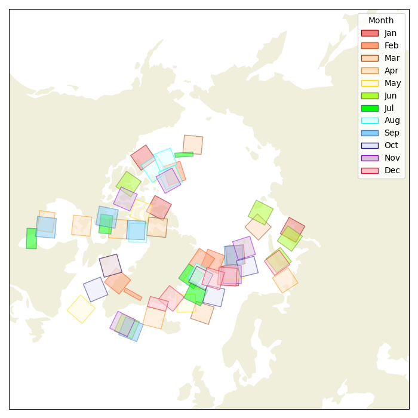

A listing of C-band SAR image files from Sentinel-1A. The spatial distribution of scenes are shown below color coded by month of acquisition.
Click on "Thumbnail" to see larger image.
| Native-ID | Acquisition Date | Size MB | Thumbnail |
|---|---|---|---|
| S1A_EW_GRDM_1SDH_20210102T123747_20210102T123847_035959_043656_0CEC-GRD_MD | 2021-01-02T12:38:47+00:00 | 237.36 | |
| S1A_EW_GRDM_1SDH_20210102T155100_20210102T155204_035961_043666_9807-GRD_MD | 2021-01-02T15:52:04+00:00 | 253.78 | |
| S1A_EW_GRDM_1SDH_20210102T155204_20210102T155304_035961_043666_C473-GRD_MD | 2021-01-02T15:53:04+00:00 | 242.49 | |
| S1A_EW_GRDM_1SDH_20210103T050059_20210103T050203_035969_0436B4_9E92-GRD_MD | 2021-01-03T05:02:03+00:00 | 223.00 | |
| S1A_EW_GRDM_1SDH_20210103T063943_20210103T064048_035970_0436BF_04DA-GRD_MD | 2021-01-03T06:40:48+00:00 | 245.46 | |
| S1A_EW_GRDM_1SDH_20210103T064148_20210103T064248_035970_0436BF_270D-GRD_MD | 2021-01-03T06:42:48+00:00 | 205.27 | |
| S1A_EW_GRDM_1SDH_20210103T180537_20210103T180637_035977_0436FE_0025-GRD_MD | 2021-01-03T18:06:37+00:00 | 272.70 | |
| S1A_EW_GRDM_1SDH_20210105T175533_20210105T175636_036006_0437F1_7B9B-GRD_MD | 2021-01-05T17:56:36+00:00 | 212.81 | |
| S1A_EW_GRDM_1SDH_20210105T193334_20210105T193439_036007_0437FB_FA90-GRD_MD | 2021-01-05T19:34:39+00:00 | 217.28 | |
| S1A_EW_GRDM_1SDH_20210106T200241_20210106T200345_036022_043883_6107-GRD_MD | 2021-01-06T20:03:45+00:00 | 204.03 | |
| S1A_EW_GRDM_1SDH_20210107T060648_20210107T060753_036028_0438B5_018C-GRD_MD | 2021-01-07T06:07:53+00:00 | 244.09 | |
| S1A_EW_GRDM_1SDH_20210107T060753_20210107T060853_036028_0438B5_51E9-GRD_MD | 2021-01-07T06:08:53+00:00 | 208.21 | |
| S1A_EW_GRDM_1SDH_20210108T033232_20210108T033332_036041_043934_BDB5-GRD_MD | 2021-01-08T03:33:32+00:00 | 207.96 | |
| S1A_EW_GRDM_1SDH_20210108T150243_20210108T150343_036048_043975_7A07-GRD_MD | 2021-01-08T15:03:43+00:00 | 239.44 | |
| S1A_EW_GRDM_1SDH_20210110T013514_20210110T013619_036069_043A3E_6FD7-GRD_MD | 2021-01-10T01:36:19+00:00 | 238.08 | |
| S1A_EW_GRDM_1SDH_20210110T013619_20210110T013719_036069_043A3E_B43F-GRD_MD | 2021-01-10T01:37:19+00:00 | 217.73 | |
| S1A_EW_GRDM_1SDH_20210110T031503_20210110T031603_036070_043A45_3826-GRD_MD | 2021-01-10T03:16:03+00:00 | 224.05 | |
| S1A_EW_GRDM_1SDH_20210110T130933_20210110T131031_036076_043A82_CAE6-GRD_MD | 2021-01-10T13:10:31+00:00 | 217.88 | |
| S1A_EW_GRDM_1SDH_20210110T211035_20210110T211135_036081_043AA9_9CF7-GRD_MD | 2021-01-10T21:11:35+00:00 | 218.77 | |
| S1A_EW_GRDM_1SDH_20210113T020059_20210113T020159_036113_043BC4_854E-GRD_MD | 2021-01-13T02:01:59+00:00 | 212.64 | |
| S1A_EW_GRDM_1SDH_20210113T020159_20210113T020259_036113_043BC4_472B-GRD_MD | 2021-01-13T02:02:59+00:00 | 223.58 | |
| S1A_EW_GRDM_1SDH_20210113T101813_20210113T101913_036118_043BF4_53A2-GRD_MD | 2021-01-13T10:19:13+00:00 | 216.41 | |
| S1A_EW_GRDM_1SDH_20210113T102013_20210113T102105_036118_043BF4_05B9-GRD_MD | 2021-01-13T10:21:05+00:00 | 192.98 | |
| S1A_EW_GRDM_1SDH_20210113T115652_20210113T115752_036119_043BFC_3320-GRD_MD | 2021-01-13T11:57:52+00:00 | 229.93 | |
| S1A_EW_GRDM_1SDH_20210113T151058_20210113T151158_036121_043C0F_38C4-GRD_MD | 2021-01-13T15:11:58+00:00 | 239.79 | |
| S1A_EW_GRDM_1SDH_20210115T163209_20210115T163313_036151_043D1C_E6B8-GRD_MD | 2021-01-15T16:33:13+00:00 | 250.60 | |
| S1A_EW_GRDM_1SDH_20210115T180339_20210115T180439_036152_043D22_3888-GRD_MD | 2021-01-15T18:04:39+00:00 | 213.80 | |
| S1A_EW_GRDM_1SDH_20210116T153738_20210116T153836_036165_043D86_4CEF-GRD_MD | 2021-01-16T15:38:36+00:00 | 220.18 | |
| S1A_EW_GRDM_1SDH_20210118T183638_20210118T183738_036196_043EA0_B0F9-GRD_MD | 2021-01-18T18:37:38+00:00 | 206.32 | |
| S1A_EW_GRDM_1SDH_20210118T200544_20210118T200557_036197_043EA7_31A7-GRD_MD | 2021-01-18T20:05:57+00:00 | 54.19 | |
| S1A_EW_GRDM_1SDH_20210119T060752_20210119T060852_036203_043EDF_2A90-GRD_MD | 2021-01-19T06:08:52+00:00 | 216.03 | |
| S1A_EW_GRDM_1SDH_20210119T075025_20210119T075057_036204_043EE7_DB04-GRD_MD | 2021-01-19T07:50:57+00:00 | 115.12 | |
| S1A_EW_GRDM_1SDH_20210120T150443_20210120T150541_036223_043F9D_AB1A-GRD_MD | 2021-01-20T15:05:41+00:00 | 217.13 | |
| S1A_EW_GRDM_1SDH_20210121T023553_20210121T023652_036230_043FD5_C0B4-GRD_MD | 2021-01-21T02:36:52+00:00 | 223.43 | |
| S1A_EW_GRDM_1SDH_20210121T104909_20210121T105012_036235_043FFE_06E6-GRD_MD | 2021-01-21T10:50:12+00:00 | 220.81 | |
| S1A_EW_GRDM_1SDH_20210121T185202_20210121T185307_036240_044038_4759-GRD_MD | 2021-01-21T18:53:07+00:00 | 259.47 | |
| S1A_EW_GRDM_1SDH_20210122T063128_20210122T063233_036247_044076_C8A3-GRD_MD | 2021-01-22T06:32:33+00:00 | 239.67 | |
| S1A_EW_GRDM_1SDH_20210122T162459_20210122T162608_036253_0440AD_E15C-GRD_MD | 2021-01-22T16:26:08+00:00 | 264.08 | |
| S1A_EW_GRDM_1SDH_20210124T111640_20210124T111742_036279_04417D_701F-GRD_MD | 2021-01-24T11:17:42+00:00 | 240.28 | |
| S1A_EW_GRDM_1SDH_20210124T125103_20210124T125203_036280_044188_45DF-GRD_MD | 2021-01-24T12:52:03+00:00 | 251.48 | |
| S1A_EW_GRDM_1SDH_20210125T115852_20210125T115952_036294_04420B_A4DB-GRD_MD | 2021-01-25T11:59:52+00:00 | 209.65 | |
| S1A_EW_GRDM_1SDH_20210125T182827_20210125T182927_036298_044232_8031-GRD_MD | 2021-01-25T18:29:27+00:00 | 207.20 | |
| S1A_EW_GRDM_1SDH_20210125T195733_20210125T195746_036299_04423A_4907-GRD_MD | 2021-01-25T19:57:46+00:00 | 54.07 | |
| S1A_EW_GRDM_1SDH_20210127T064047_20210127T064147_036320_0442FB_7B36-GRD_MD | 2021-01-27T06:41:47+00:00 | 215.10 | |
| S1A_EW_GRDM_1SDH_20210128T122123_20210128T122223_036338_04438E_5F22-GRD_MD | 2021-01-28T12:22:23+00:00 | 236.80 | |
| S1A_EW_GRDM_1SDH_20210128T122323_20210128T122409_036338_04438E_4ABF-GRD_MD | 2021-01-28T12:24:09+00:00 | 156.50 | |
| S1A_EW_GRDM_1SDH_20210129T080140_20210129T080244_036350_0443EC_5CC1-GRD_MD | 2021-01-29T08:02:44+00:00 | 242.14 | |
| S1A_EW_GRDM_1SDH_20210129T080244_20210129T080344_036350_0443EC_9869-GRD_MD | 2021-01-29T08:03:44+00:00 | 234.24 | |
| S1A_EW_GRDM_1SDH_20210129T175427_20210129T175532_036356_04442B_760C-GRD_MD | 2021-01-29T17:55:32+00:00 | 225.69 | |
| S1A_EW_GRDM_1SDH_20210130T120609_20210130T120709_036367_044495_E2DF-GRD_MD | 2021-01-30T12:07:09+00:00 | 204.91 | |
| S1A_EW_GRDM_1SDH_20210201T100829_20210201T100932_036395_04458F_4B31-GRD_MD | 2021-02-01T10:09:32+00:00 | 257.40 | |
| S1A_EW_GRDM_1SDH_20210201T181256_20210201T181356_036400_0445BD_5F6D-GRD_MD | 2021-02-01T18:13:56+00:00 | 260.05 | |
| S1A_EW_GRDM_1SDH_20210203T031703_20210203T031803_036420_044671_2725-GRD_MD | 2021-02-03T03:18:03+00:00 | 232.70 | |
| S1A_EW_GRDM_1SDH_20210203T081617_20210203T081718_036423_044690_732F-GRD_MD | 2021-02-03T08:17:18+00:00 | 203.99 | |
| S1A_EW_GRDM_1SDH_20210204T121011_20210204T121111_036440_044711_E7C0-GRD_MD | 2021-02-04T12:11:11+00:00 | 232.45 | |
| S1A_EW_GRDM_1SDH_20210204T134734_20210204T134838_036441_04471A_A357-GRD_MD | 2021-02-04T13:48:38+00:00 | 255.31 | |
| S1A_EW_GRDM_1SDH_20210204T201158_20210204T201258_036445_044739_9272-GRD_MD | 2021-02-04T20:12:58+00:00 | 208.89 | |
| S1A_EW_GRDM_1SDH_20210205T143048_20210205T143148_036456_0447A0_4D72-GRD_MD | 2021-02-05T14:31:48+00:00 | 238.41 | |
| S1A_EW_GRDM_1SDH_20210205T205435_20210205T205536_036460_0447C9_216C-GRD_MD | 2021-02-05T20:55:36+00:00 | 237.69 | |
| S1A_EW_GRDM_1SDH_20210206T182826_20210206T182926_036473_04483C_50DB-GRD_MD | 2021-02-06T18:29:26+00:00 | 206.15 | |
| S1A_EW_GRDM_1SDH_20210206T195632_20210206T195732_036474_044844_FD83-GRD_MD | 2021-02-06T19:57:32+00:00 | 247.68 | |
| S1A_EW_GRDM_1SDH_20210206T200616_20210206T200720_036474_044845_2451-GRD_MD | 2021-02-06T20:07:20+00:00 | 217.32 | |
| S1A_EW_GRDM_1SDH_20210207T155303_20210207T155403_036486_0448B0_997A-GRD_MD | 2021-02-07T15:54:03+00:00 | 236.38 | |
| S1A_EW_GRDM_1SDH_20210208T082007_20210208T082107_036496_044911_8C01-GRD_MD | 2021-02-08T08:21:07+00:00 | 249.49 | |
| S1A_EW_GRDM_1SDH_20210208T082107_20210208T082207_036496_044911_CA5C-GRD_MD | 2021-02-08T08:22:07+00:00 | 253.47 | |
| S1A_EW_GRDM_1SDH_20210208T113951_20210208T114055_036498_044924_11E6-GRD_MD | 2021-02-08T11:40:55+00:00 | 240.19 | |
| S1A_EW_GRDM_1SDH_20210208T180235_20210208T180335_036502_044947_3716-GRD_MD | 2021-02-08T18:03:35+00:00 | 201.26 | |
| S1A_EW_GRDM_1SDH_20210209T122223_20210209T122323_036513_04499D_BF00-GRD_MD | 2021-02-09T12:23:23+00:00 | 208.42 | |
| S1A_EW_GRDM_1SDH_20210211T034653_20210211T034757_036537_044A6A_263E-GRD_MD | 2021-02-11T03:47:57+00:00 | 238.88 | |
| S1A_EW_GRDM_1SDH_20210211T070853_20210211T070953_036539_044A85_749C-GRD_MD | 2021-02-11T07:09:53+00:00 | 201.63 | |
| S1A_EW_GRDM_1SDH_20210212T191710_20210212T191814_036561_044B50_4B76-GRD_MD | 2021-02-12T19:18:14+00:00 | 214.01 | |
| S1A_EW_GRDM_1SDH_20210213T033231_20210213T033331_036566_044B7D_2371-GRD_MD | 2021-02-13T03:33:31+00:00 | 221.12 | |
| S1A_EW_GRDM_1SDH_20210213T050909_20210213T051013_036567_044B87_E483-GRD_MD | 2021-02-13T05:10:13+00:00 | 233.17 | |
| S1A_EW_GRDM_1SDH_20210213T064754_20210213T064858_036568_044B91_6A29-GRD_MD | 2021-02-13T06:48:58+00:00 | 250.03 | |
| S1A_EW_GRDM_1SDH_20210213T065058_20210213T065156_036568_044B91_5213-GRD_MD | 2021-02-13T06:51:56+00:00 | 185.04 | |
| S1A_EW_GRDM_1SDH_20210213T082718_20210213T082818_036569_044B9C_4EA2-GRD_MD | 2021-02-13T08:28:18+00:00 | 245.25 | |
| S1A_EW_GRDM_1SDH_20210213T082918_20210213T083018_036569_044B9C_F41C-GRD_MD | 2021-02-13T08:30:18+00:00 | 267.24 | |
| S1A_EW_GRDM_1SDH_20210213T180951_20210213T181056_036575_044BD0_057B-GRD_MD | 2021-02-13T18:10:56+00:00 | 227.88 | |
| S1A_EW_GRDM_1SDH_20210214T140607_20210214T140707_036587_044C46_95DD-GRD_MD | 2021-02-14T14:07:07+00:00 | 236.67 | |
| S1A_EW_GRDM_1SDH_20210215T063232_20210215T063332_036597_044CA6_68F7-GRD_MD | 2021-02-15T06:33:32+00:00 | 203.96 | |
| S1A_EW_GRDM_1SDH_20210215T112914_20210215T113014_036600_044CC2_447E-GRD_MD | 2021-02-15T11:30:14+00:00 | 213.35 | |
| S1A_EW_GRDM_1SDH_20210215T130627_20210215T130731_036601_044CCA_5B44-GRD_MD | 2021-02-15T13:07:31+00:00 | 276.82 | |
| S1A_EW_GRDM_1SDH_20210217T030036_20210217T030135_036624_044D78_68F9-GRD_MD | 2021-02-17T03:01:35+00:00 | 215.90 | |
| S1A_EW_GRDM_1SDH_20210217T174612_20210217T174717_036633_044DD8_9A04-GRD_MD | 2021-02-17T17:47:17+00:00 | 231.17 | |
| S1A_EW_GRDM_1SDH_20210218T195428_20210218T195532_036649_044E63_4185-GRD_MD | 2021-02-18T19:55:32+00:00 | 209.92 | |
| S1A_EW_GRDM_1SDH_20210220T014327_20210220T014432_036667_044F06_C1D6-GRD_MD | 2021-02-20T01:44:32+00:00 | 238.23 | |
| S1A_EW_GRDM_1SDH_20210222T080544_20210222T080644_036700_04501C_5854-GRD_MD | 2021-02-22T08:06:44+00:00 | 220.44 | |
| S1A_EW_GRDM_1SDH_20210222T174526_20210222T174614_036706_045057_BEBB-GRD_MD | 2021-02-22T17:46:14+00:00 | 161.30 | |
| S1A_EW_GRDM_1SDH_20210222T175531_20210222T175634_036706_04505A_A5A5-GRD_MD | 2021-02-22T17:56:34+00:00 | 209.90 | |
| S1A_EW_GRDM_1SDH_20210223T070630_20210223T070706_036714_04509F_C903-GRD_MD | 2021-02-23T07:07:06+00:00 | 114.87 | |
| S1A_EW_GRDM_1SDH_20210223T102537_20210223T102646_036716_0450B4_A77C-GRD_MD | 2021-02-23T10:26:46+00:00 | 248.95 | |
| S1A_EW_GRDM_1SDH_20210223T151908_20210223T152008_036719_0450CD_E305-GRD_MD | 2021-02-23T15:20:08+00:00 | 241.97 | |
| S1A_EW_GRDM_1SDH_20210224T110531_20210224T110634_036731_045136_3ED1-GRD_MD | 2021-02-24T11:06:34+00:00 | 226.73 | |
| S1A_EW_GRDM_1SDH_20210224T155913_20210224T160017_036734_045150_59B6-GRD_MD | 2021-02-24T16:00:17+00:00 | 254.62 | |
| S1A_EW_GRDM_1SDH_20210224T190721_20210224T190825_036736_045164_3EB4-GRD_MD | 2021-02-24T19:08:25+00:00 | 234.66 | |
| S1A_EW_GRDM_1SDH_20210225T150342_20210225T150442_036748_0451D2_3BA5-GRD_MD | 2021-02-25T15:04:42+00:00 | 224.12 | |
| S1A_EW_GRDM_1SDH_20210226T041237_20210226T041337_036756_04521D_6F84-GRD_MD | 2021-02-26T04:13:37+00:00 | 213.83 | |
| S1A_EW_GRDM_1SDH_20210226T104804_20210226T104908_036760_045241_B7F8-GRD_MD | 2021-02-26T10:49:08+00:00 | 262.47 | |
| S1A_EW_GRDM_1SDH_20210228T134838_20210228T134938_036791_04534F_9DF9-GRD_MD | 2021-02-28T13:49:38+00:00 | 237.94 | |
| S1A_EW_GRDM_1SDH_20210228T152922_20210228T153021_036792_045357_B6DF-GRD_MD | 2021-02-28T15:30:21+00:00 | 220.93 | |
| S1A_EW_GRDM_1SDH_20210301T025936_20210301T030036_036799_045388_D007-GRD_MD | 2021-03-01T03:00:36+00:00 | 224.09 | |
| S1A_EW_GRDM_1SDH_20210301T075648_20210301T075746_036802_0453A6_C21D-GRD_MD | 2021-03-01T07:57:46+00:00 | 211.87 | |
| S1A_EW_GRDM_1SDH_20210302T034043_20210302T034142_036814_045417_C8FC-GRD_MD | 2021-03-02T03:41:42+00:00 | 221.45 | |
| S1A_EW_GRDM_1SDH_20210302T195632_20210302T195732_036824_045470_50F0-GRD_MD | 2021-03-02T19:57:32+00:00 | 246.29 | |
| S1A_EW_GRDM_1SDH_20210303T123645_20210303T123745_036834_0454CC_66E7-GRD_MD | 2021-03-03T12:37:45+00:00 | 243.20 | |
| S1A_EW_GRDM_1SDH_20210304T082206_20210304T082306_036846_045537_AB1A-GRD_MD | 2021-03-04T08:23:06+00:00 | 216.48 | |
| S1A_EW_GRDM_1SDH_20210304T181157_20210304T181257_036852_04556E_F39B-GRD_MD | 2021-03-04T18:12:57+00:00 | 205.75 | |
| S1A_EW_GRDM_1SDH_20210305T040526_20210305T040626_036858_04559B_6A18-GRD_MD | 2021-03-05T04:06:26+00:00 | 199.11 | |
| S1A_EW_GRDM_1SDH_20210305T072252_20210305T072352_036860_0455AC_3A83-GRD_MD | 2021-03-05T07:23:52+00:00 | 217.30 | |
| S1A_EW_GRDM_1SDH_20210307T020912_20210307T021012_036886_045699_5264-GRD_MD | 2021-03-07T02:10:12+00:00 | 215.52 | |
| S1A_EW_GRDM_1SDH_20210309T051013_20210309T051101_036917_0457B9_53B8-GRD_MD | 2021-03-09T05:11:01+00:00 | 167.17 | |
| S1A_EW_GRDM_1SDH_20210309T132557_20210309T132656_036922_0457EA_415C-GRD_MD | 2021-03-09T13:26:56+00:00 | 218.63 | |
| S1A_EW_GRDM_1SDH_20210309T150138_20210309T150242_036923_0457F0_D535-GRD_MD | 2021-03-09T15:02:42+00:00 | 258.33 | |
| S1A_EW_GRDM_1SDH_20210309T195804_20210309T195909_036926_045809_A539-GRD_MD | 2021-03-09T19:59:09+00:00 | 217.65 | |
| S1A_EW_GRDM_1SDH_20210310T005403_20210310T005508_036929_045827_0E58-GRD_MD | 2021-03-10T00:55:08+00:00 | 239.47 | |
| S1A_EW_GRDM_1SDH_20210310T140402_20210310T140507_036937_045876_D1F0-GRD_MD | 2021-03-10T14:05:07+00:00 | 255.76 | |
| S1A_EW_GRDM_1SDH_20210311T210829_20210311T210933_036956_045918_13E7-GRD_MD | 2021-03-11T21:09:33+00:00 | 232.61 | |
| S1A_EW_GRDM_1SDH_20210312T035712_20210312T035812_036960_045932_4679-GRD_MD | 2021-03-12T03:58:12+00:00 | 219.14 | |
| S1A_EW_GRDM_1SDH_20210312T035812_20210312T035912_036960_045932_DE38-GRD_MD | 2021-03-12T03:59:12+00:00 | 227.80 | |
| S1A_EW_GRDM_1SDH_20210313T075448_20210313T075548_036977_0459C7_9E12-GRD_MD | 2021-03-13T07:55:48+00:00 | 228.42 | |
| S1A_EW_GRDM_1SDH_20210314T070012_20210314T070111_036991_045A4D_F984-GRD_MD | 2021-03-14T07:01:11+00:00 | 193.21 | |
| S1A_EW_GRDM_1SDH_20210316T212142_20210316T212242_037029_045BA3_A4EC-GRD_MD | 2021-03-16T21:22:42+00:00 | 222.57 | |
| S1A_EW_GRDM_1SDH_20210317T185202_20210317T185306_037042_045C0F_16E3-GRD_MD | 2021-03-17T18:53:06+00:00 | 212.55 | |
| S1A_EW_GRDM_1SDH_20210318T080344_20210318T080444_037050_045C47_8F0C-GRD_MD | 2021-03-18T08:04:44+00:00 | 236.11 | |
| S1A_EW_GRDM_1SDH_20210318T174727_20210318T174832_037056_045C86_8EEC-GRD_MD | 2021-03-18T17:48:32+00:00 | 230.27 | |
| S1A_EW_GRDM_1SDH_20210319T034857_20210319T034957_037062_045CBF_6F7D-GRD_MD | 2021-03-19T03:49:57+00:00 | 199.52 | |
| S1A_EW_GRDM_1SDH_20210319T070630_20210319T070706_037064_045CD4_01D3-GRD_MD | 2021-03-19T07:07:06+00:00 | 130.79 | |
| S1A_EW_GRDM_1SDH_20210320T142233_20210320T142333_037083_045D81_8F60-GRD_MD | 2021-03-20T14:23:33+00:00 | 239.40 | |
| S1A_EW_GRDM_1SDH_20210321T082818_20210321T082918_037094_045DEE_E5A5-GRD_MD | 2021-03-21T08:29:18+00:00 | 262.61 | |
| S1A_EW_GRDM_1SDH_20210322T140607_20210322T140707_037112_045E86_B993-GRD_MD | 2021-03-22T14:07:07+00:00 | 239.02 | |
| S1A_EW_GRDM_1SDH_20210323T081417_20210323T081517_037123_045EED_D0CB-GRD_MD | 2021-03-23T08:15:17+00:00 | 211.15 | |
| S1A_EW_GRDM_1SDH_20210325T205335_20210325T205435_037160_046022_513C-GRD_MD | 2021-03-25T20:54:35+00:00 | 249.94 | |
| S1A_EW_GRDM_1SDH_20210326T020158_20210326T020258_037163_046039_8F4C-GRD_MD | 2021-03-26T02:02:58+00:00 | 222.54 | |
| S1A_EW_GRDM_1SDH_20210326T065813_20210326T065912_037166_046055_1505-GRD_MD | 2021-03-26T06:59:12+00:00 | 205.50 | |
| S1A_EW_GRDM_1SDH_20210326T101841_20210326T101941_037168_046066_FFAA-GRD_MD | 2021-03-26T10:19:41+00:00 | 217.53 | |
| S1A_EW_GRDM_1SDH_20210326T115551_20210326T115651_037169_04606E_8464-GRD_MD | 2021-03-26T11:56:51+00:00 | 235.10 | |
| S1A_EW_GRDM_1SDH_20210327T024103_20210327T024207_037178_0460BD_5F11-GRD_MD | 2021-03-27T02:42:07+00:00 | 227.08 | |
| S1A_EW_GRDM_1SDH_20210328T050057_20210328T050202_037194_046152_79ED-GRD_MD | 2021-03-28T05:02:02+00:00 | 236.46 | |
| S1A_EW_GRDM_1SDH_20210328T064046_20210328T064146_037195_04615D_27BD-GRD_MD | 2021-03-28T06:41:46+00:00 | 205.60 | |
| S1A_EW_GRDM_1SDH_20210328T064146_20210328T064246_037195_04615D_DF0F-GRD_MD | 2021-03-28T06:42:46+00:00 | 212.68 | |
| S1A_EW_GRDM_1SDH_20210329T072153_20210329T072253_037210_0461D8_B035-GRD_MD | 2021-03-29T07:22:53+00:00 | 218.51 | |
| S1A_EW_GRDM_1SDH_20210329T121923_20210329T122023_037213_0461F4_AD7A-GRD_MD | 2021-03-29T12:20:23+00:00 | 256.50 | |
| S1A_EW_GRDM_1SDH_20210329T201933_20210329T202037_037218_04621D_F301-GRD_MD | 2021-03-29T20:20:37+00:00 | 224.03 | |
| S1A_EW_GRDM_1SDH_20210330T030748_20210330T030848_037222_046239_AD49-GRD_MD | 2021-03-30T03:08:48+00:00 | 225.18 | |
| S1A_EW_GRDM_1SDH_20210330T030848_20210330T030946_037222_046239_C3F4-GRD_MD | 2021-03-30T03:09:46+00:00 | 214.52 | |
| S1A_EW_GRDM_1SDH_20210330T044533_20210330T044633_037223_046244_5844-GRD_MD | 2021-03-30T04:46:33+00:00 | 201.50 | |
| S1A_EW_GRDM_1SDH_20210330T080244_20210330T080344_037225_046256_B76E-GRD_MD | 2021-03-30T08:03:44+00:00 | 226.47 | |
| S1A_EW_GRDM_1SDH_20210330T193333_20210330T193437_037232_04629E_5A25-GRD_MD | 2021-03-30T19:34:37+00:00 | 218.21 | |
| S1A_EW_GRDM_1SDH_20210331T183638_20210331T183738_037246_046320_D175-GRD_MD | 2021-03-31T18:37:38+00:00 | 206.27 | |
| S1A_EW_GRDM_1SDH_20210331T200544_20210331T200557_037247_046327_0837-GRD_MD | 2021-03-31T20:05:57+00:00 | 54.27 | |
| S1A_EW_GRDM_1SDH_20210401T142333_20210401T142433_037258_046389_7793-GRD_MD | 2021-04-01T14:24:33+00:00 | 232.98 | |
| S1A_EW_GRDM_1SDH_20210401T173902_20210401T174002_037260_04639B_2F6B-GRD_MD | 2021-04-01T17:40:02+00:00 | 210.46 | |
| S1A_EW_GRDM_1SDH_20210402T033131_20210402T033231_037266_0463D6_6E7E-GRD_MD | 2021-04-02T03:32:31+00:00 | 224.18 | |
| S1A_EW_GRDM_1SDH_20210402T194918_20210402T194931_037276_04642F_F07C-GRD_MD | 2021-04-02T19:49:31+00:00 | 53.26 | |
| S1A_EW_GRDM_1SDH_20210403T023453_20210403T023553_037280_04644C_569F-GRD_MD | 2021-04-03T02:35:53+00:00 | 219.25 | |
| S1A_EW_GRDM_1SDH_20210403T122536_20210403T122630_037286_046484_688E-GRD_MD | 2021-04-03T12:26:30+00:00 | 229.38 | |
| S1A_EW_GRDM_1SDH_20210403T140403_20210403T140507_037287_04648C_39FC-GRD_MD | 2021-04-03T14:05:07+00:00 | 255.30 | |
| S1A_EW_GRDM_1SDH_20210404T013513_20210404T013618_037294_0464CD_5214-GRD_MD | 2021-04-04T01:36:18+00:00 | 236.61 | |
| S1A_EW_GRDM_1SDH_20210404T081317_20210404T081417_037298_0464F5_290F-GRD_MD | 2021-04-04T08:14:17+00:00 | 242.94 | |
| S1A_EW_GRDM_1SDH_20210404T113214_20210404T113314_037300_046508_B76C-GRD_MD | 2021-04-04T11:33:14+00:00 | 233.00 | |
| S1A_EW_GRDM_1SDH_20210404T210934_20210404T211034_037306_046537_27E4-GRD_MD | 2021-04-04T21:10:34+00:00 | 202.02 | |
| S1A_EW_GRDM_1SDH_20210405T071237_20210405T071342_037312_046567_AB1A-GRD_MD | 2021-04-05T07:13:42+00:00 | 245.26 | |
| S1A_EW_GRDM_1SDH_20210405T152723_20210405T152823_037317_04658D_BA00-GRD_MD | 2021-04-05T15:28:23+00:00 | 239.38 | |
| S1A_EW_GRDM_1SDH_20210406T075344_20210406T075448_037327_0465E0_5491-GRD_MD | 2021-04-06T07:54:48+00:00 | 241.13 | |
| S1A_EW_GRDM_1SDH_20210407T033839_20210407T033943_037339_046652_99B7-GRD_MD | 2021-04-07T03:39:43+00:00 | 239.56 | |
| S1A_EW_GRDM_1SDH_20210410T103956_20210410T104100_037387_0467F1_5639-GRD_MD | 2021-04-10T10:41:00+00:00 | 270.88 | |
| S1A_EW_GRDM_1SDH_20210410T153433_20210410T153538_037390_04680B_A838-GRD_MD | 2021-04-10T15:35:38+00:00 | 255.09 | |
| S1A_EW_GRDM_1SDH_20210411T080140_20210411T080244_037400_04685E_FEF2-GRD_MD | 2021-04-11T08:02:44+00:00 | 244.00 | |
| S1A_EW_GRDM_1SDH_20210411T080544_20210411T080644_037400_04685E_D2ED-GRD_MD | 2021-04-11T08:06:44+00:00 | 224.88 | |
| S1A_EW_GRDM_1SDH_20210411T175632_20210411T175720_037406_04689F_759B-GRD_MD | 2021-04-11T17:57:20+00:00 | 167.21 | |
| S1A_EW_GRDM_1SDH_20210412T102538_20210412T102647_037416_0468FF_8FD9-GRD_MD | 2021-04-12T10:26:47+00:00 | 250.16 | |
| S1A_EW_GRDM_1SDH_20210413T074520_20210413T074625_037429_046971_7335-GRD_MD | 2021-04-13T07:46:25+00:00 | 235.98 | |
| S1A_EW_GRDM_1SDH_20210414T083119_20210414T083139_037444_046A03_FA88-GRD_MD | 2021-04-14T08:31:39+00:00 | 64.64 | |
| S1A_EW_GRDM_1SDH_20210414T194718_20210414T194818_037451_046A3D_6F12-GRD_MD | 2021-04-14T19:48:18+00:00 | 204.05 | |
| S1A_EW_GRDM_1SDH_20210414T195805_20210414T195909_037451_046A3E_65AF-GRD_MD | 2021-04-14T19:59:09+00:00 | 217.14 | |
| S1A_EW_GRDM_1SDH_20210416T112915_20210416T113015_037475_046B15_BBAD-GRD_MD | 2021-04-16T11:30:15+00:00 | 211.85 | |
| S1A_EW_GRDM_1SDH_20210416T180239_20210416T180344_037479_046B34_CCCB-GRD_MD | 2021-04-16T18:03:44+00:00 | 215.25 | |
| S1A_EW_GRDM_1SDH_20210417T134839_20210417T134939_037491_046B8B_16EF-GRD_MD | 2021-04-17T13:49:39+00:00 | 237.00 | |
| S1A_EW_GRDM_1SDH_20210417T134939_20210417T135039_037491_046B8B_0898-GRD_MD | 2021-04-17T13:50:39+00:00 | 237.10 | |
| S1A_EW_GRDM_1SDH_20210417T135039_20210417T135134_037491_046B8B_0620-GRD_MD | 2021-04-17T13:51:34+00:00 | 208.67 | |
| S1A_EW_GRDM_1SDH_20210419T151258_20210419T151356_037521_046C99_D33E-GRD_MD | 2021-04-19T15:13:56+00:00 | 219.51 | |
| S1A_EW_GRDM_1SDH_20210420T074023_20210420T074124_037531_046CEF_763F-GRD_MD | 2021-04-20T07:41:24+00:00 | 195.52 | |
| S1A_EW_GRDM_1SDH_20210420T155204_20210420T155304_037536_046D1F_B924-GRD_MD | 2021-04-20T15:53:04+00:00 | 241.61 | |
| S1A_EW_GRDM_1SDH_20210421T114056_20210421T114156_037548_046D98_8B84-GRD_MD | 2021-04-21T11:41:56+00:00 | 235.06 | |
| S1A_EW_GRDM_1SDH_20210423T112045_20210423T112149_037577_046E83_BD9B-GRD_MD | 2021-04-23T11:21:49+00:00 | 245.07 | |
| S1A_EW_GRDM_1SDH_20210424T020913_20210424T021013_037586_046ED3_813D-GRD_MD | 2021-04-24T02:10:13+00:00 | 215.03 | |
| S1A_EW_GRDM_1SDH_20210424T021113_20210424T021212_037586_046ED3_E575-GRD_MD | 2021-04-24T02:12:12+00:00 | 213.01 | |
| S1A_EW_GRDM_1SDH_20210424T120106_20210424T120210_037592_046F12_29E4-GRD_MD | 2021-04-24T12:02:10+00:00 | 274.84 | |
| S1A_EW_GRDM_1SDH_20210424T200445_20210424T200545_037597_046F39_3DB4-GRD_MD | 2021-04-24T20:05:45+00:00 | 241.86 | |
| S1A_EW_GRDM_1SDH_20210425T075025_20210425T075058_037604_046F7B_F861-GRD_MD | 2021-04-25T07:50:58+00:00 | 111.67 | |
| S1A_EW_GRDM_1SDH_20210425T110532_20210425T110635_037606_046F8C_FFB6-GRD_MD | 2021-04-25T11:06:35+00:00 | 224.49 | |
| S1A_EW_GRDM_1SDH_20210426T033232_20210426T033332_037616_046FEC_01CD-GRD_MD | 2021-04-26T03:33:32+00:00 | 218.93 | |
| S1A_EW_GRDM_1SDH_20210426T064959_20210426T065059_037618_047000_AB1B-GRD_MD | 2021-04-26T06:50:59+00:00 | 198.02 | |
| S1A_EW_GRDM_1SDH_20210428T031603_20210428T031703_037645_0470F4_A1DC-GRD_MD | 2021-04-28T03:17:03+00:00 | 226.00 | |
| S1A_EW_GRDM_1SDH_20210428T113015_20210428T113115_037650_047126_B566-GRD_MD | 2021-04-28T11:31:15+00:00 | 240.50 | |
| S1A_EW_GRDM_1SDH_20210428T175652_20210428T175742_037654_047145_17A0-GRD_MD | 2021-04-28T17:57:42+00:00 | 197.27 | |
| S1A_EW_GRDM_1SDH_20210429T201259_20210429T201359_037670_0471C3_903F-GRD_MD | 2021-04-29T20:13:59+00:00 | 253.03 | |
| S1A_EW_GRDM_1SDH_20210430T125304_20210430T125402_037680_047220_3EAB-GRD_MD | 2021-04-30T12:54:02+00:00 | 221.92 | |
| S1A_EW_GRDM_1SDH_20210430T142949_20210430T143049_037681_04722A_6E58-GRD_MD | 2021-04-30T14:30:49+00:00 | 234.71 | |
| S1A_EW_GRDM_1SDH_20210430T174818_20210430T174925_037683_04723B_4E3A-GRD_MD | 2021-04-30T17:49:25+00:00 | 232.55 | |
| S1A_EW_GRDM_1SDH_20210502T042053_20210502T042153_037704_0472F4_685D-GRD_MD | 2021-05-02T04:21:53+00:00 | 200.71 | |
| S1A_EW_GRDM_1SDH_20210502T073719_20210502T073823_037706_047304_8442-GRD_MD | 2021-05-02T07:38:23+00:00 | 228.93 | |
| S1A_EW_GRDM_1SDH_20210502T155204_20210502T155304_037711_047334_C5CA-GRD_MD | 2021-05-02T15:53:04+00:00 | 240.32 | |
| S1A_EW_GRDM_1SDH_20210502T203658_20210502T203758_037714_04734F_E6D7-GRD_MD | 2021-05-02T20:37:58+00:00 | 262.99 | |
| S1A_EW_GRDM_1SDH_20210503T212043_20210503T212143_037729_0473E0_A4DC-GRD_MD | 2021-05-03T21:21:43+00:00 | 213.33 | |
| S1A_EW_GRDM_1SDH_20210504T040323_20210504T040428_037733_0473FC_3EE9-GRD_MD | 2021-05-04T04:04:28+00:00 | 235.56 | |
| S1A_EW_GRDM_1SDH_20210504T153739_20210504T153837_037740_047439_41B7-GRD_MD | 2021-05-04T15:38:37+00:00 | 222.37 | |
| S1A_EW_GRDM_1SDH_20210505T080141_20210505T080245_037750_04748A_E7B7-GRD_MD | 2021-05-05T08:02:45+00:00 | 234.54 | |
| S1A_EW_GRDM_1SDH_20210505T112045_20210505T112149_037752_04749E_8740-GRD_MD | 2021-05-05T11:21:49+00:00 | 243.70 | |
| S1A_EW_GRDM_1SDH_20210506T070427_20210506T070531_037764_0474FB_8BE1-GRD_MD | 2021-05-06T07:05:31+00:00 | 229.60 | |
| S1A_EW_GRDM_1SDH_20210506T120610_20210506T120710_037767_047516_27D3-GRD_MD | 2021-05-06T12:07:10+00:00 | 214.46 | |
| S1A_EW_GRDM_1SDH_20210506T120710_20210506T120759_037767_047516_BDBE-GRD_MD | 2021-05-06T12:07:59+00:00 | 173.66 | |
| S1A_EW_GRDM_1SDH_20210507T042908_20210507T043008_037777_047566_037C-GRD_MD | 2021-05-07T04:30:08+00:00 | 199.28 | |
| S1A_EW_GRDM_1SDH_20210507T190722_20210507T190827_037786_0475B0_7F65-GRD_MD | 2021-05-07T19:08:27+00:00 | 230.63 | |
| S1A_EW_GRDM_1SDH_20210508T181213_20210508T181313_037800_04761E_5C84-GRD_MD | 2021-05-08T18:13:13+00:00 | 227.95 | |
| S1A_EW_GRDM_1SDH_20210509T023250_20210509T023355_037805_047646_1D5C-GRD_MD | 2021-05-09T02:33:55+00:00 | 227.11 | |
| S1A_EW_GRDM_1SDH_20210509T023455_20210509T023549_037805_047646_A1F4-GRD_MD | 2021-05-09T02:35:49+00:00 | 195.31 | |
| S1A_EW_GRDM_1SDH_20210510T045245_20210510T045349_037821_0476C6_8AED-GRD_MD | 2021-05-10T04:53:49+00:00 | 236.75 | |
| S1A_EW_GRDM_1SDH_20210511T035814_20210511T035914_037835_04772F_9299-GRD_MD | 2021-05-11T03:59:14+00:00 | 204.56 | |
| S1A_EW_GRDM_1SDH_20210512T075550_20210512T075650_037852_0477AA_ED06-GRD_MD | 2021-05-12T07:56:50+00:00 | 217.11 | |
| S1A_EW_GRDM_1SDH_20210513T101743_20210513T101843_037868_047826_2DC6-GRD_MD | 2021-05-13T10:18:43+00:00 | 216.82 | |
| S1A_EW_GRDM_1SDH_20210514T073824_20210514T073924_037881_04787F_B3B2-GRD_MD | 2021-05-14T07:39:24+00:00 | 216.61 | |
| S1A_EW_GRDM_1SDH_20210514T110021_20210514T110124_037883_047891_EE1A-GRD_MD | 2021-05-14T11:01:24+00:00 | 237.36 | |
| S1A_EW_GRDM_1SDH_20210514T123747_20210514T123847_037884_04789B_3E0F-GRD_MD | 2021-05-14T12:38:47+00:00 | 244.17 | |
| S1A_EW_GRDM_1SDH_20210515T032319_20210515T032419_037893_0478E0_21A3-GRD_MD | 2021-05-15T03:24:19+00:00 | 226.66 | |
| S1A_EW_GRDM_1SDH_20210515T063944_20210515T064048_037895_0478F1_6EEE-GRD_MD | 2021-05-15T06:40:48+00:00 | 242.60 | |
| S1A_EW_GRDM_1SDH_20210516T040728_20210516T040818_037908_04794E_E327-GRD_MD | 2021-05-16T04:08:18+00:00 | 195.98 | |
| S1A_EW_GRDM_1SDH_20210516T203049_20210516T203153_037918_04799B_44E8-GRD_MD | 2021-05-16T20:31:53+00:00 | 219.34 | |
| S1A_EW_GRDM_1SDH_20210517T143659_20210517T143804_037929_0479F5_4504-GRD_MD | 2021-05-17T14:38:04+00:00 | 253.77 | |
| S1A_EW_GRDM_1SDH_20210518T070428_20210518T070532_037939_047A42_C345-GRD_MD | 2021-05-18T07:05:32+00:00 | 232.21 | |
| S1A_EW_GRDM_1SDH_20210518T102640_20210518T102740_037941_047A57_22F0-GRD_MD | 2021-05-18T10:27:40+00:00 | 210.34 | |
| S1A_EW_GRDM_1SDH_20210519T011035_20210519T011139_037950_047A9E_39E3-GRD_MD | 2021-05-19T01:11:39+00:00 | 239.33 | |
| S1A_EW_GRDM_1SDH_20210519T060649_20210519T060754_037953_047AB7_5F79-GRD_MD | 2021-05-19T06:07:54+00:00 | 249.49 | |
| S1A_EW_GRDM_1SDH_20210519T142135_20210519T142235_037958_047AE4_57BA-GRD_MD | 2021-05-19T14:22:35+00:00 | 235.75 | |
| S1A_EW_GRDM_1SDH_20210520T083020_20210520T083120_037969_047B42_FF98-GRD_MD | 2021-05-20T08:31:20+00:00 | 230.84 | |
| S1A_EW_GRDM_1SDH_20210522T031400_20210522T031505_037995_047C05_408E-GRD_MD | 2021-05-22T03:15:05+00:00 | 237.66 | |
| S1A_EW_GRDM_1SDH_20210522T113016_20210522T113116_038000_047C30_C491-GRD_MD | 2021-05-22T11:31:16+00:00 | 242.80 | |
| S1A_EW_GRDM_1SDH_20210522T211236_20210522T211336_038006_047C58_E853-GRD_MD | 2021-05-22T21:13:36+00:00 | 221.47 | |
| S1A_EW_GRDM_1SDH_20210522T211436_20210522T211515_038006_047C58_DD67-GRD_MD | 2021-05-22T21:15:15+00:00 | 167.08 | |
| S1A_EW_GRDM_1SDH_20210523T035814_20210523T035914_038010_047C76_AAA6-GRD_MD | 2021-05-23T03:59:14+00:00 | 218.93 | |
| S1A_EW_GRDM_1SDH_20210523T071544_20210523T071644_038012_047C86_D13E-GRD_MD | 2021-05-23T07:16:44+00:00 | 204.01 | |
| S1A_EW_GRDM_1SDH_20210523T121314_20210523T121414_038015_047C9A_CBC9-GRD_MD | 2021-05-23T12:14:14+00:00 | 241.85 | |
| S1A_EW_GRDM_1SDH_20210523T121514_20210523T121556_038015_047C9A_4002-GRD_MD | 2021-05-23T12:15:56+00:00 | 165.12 | |
| S1A_EW_GRDM_1SDH_20210523T152621_20210523T152645_038017_047CA8_A589-GRD_MD | 2021-05-23T15:26:45+00:00 | 86.36 | |
| S1A_EW_GRDM_1SDH_20210524T043616_20210524T043721_038025_047CDD_8F2D-GRD_MD | 2021-05-24T04:37:21+00:00 | 235.01 | |
| S1A_EW_GRDM_1SDH_20210524T111442_20210524T111542_038029_047D05_8D2A-GRD_MD | 2021-05-24T11:15:42+00:00 | 252.07 | |
| S1A_EW_GRDM_1SDH_20210524T142950_20210524T143050_038031_047D14_7B51-GRD_MD | 2021-05-24T14:30:50+00:00 | 233.76 | |
| S1A_EW_GRDM_1SDH_20210525T101643_20210525T101743_038043_047D70_45BA-GRD_MD | 2021-05-25T10:17:43+00:00 | 239.53 | |
| S1A_EW_GRDM_1SDH_20210530T035100_20210530T035156_038112_047F76_0A7E-GRD_MD | 2021-05-30T03:51:56+00:00 | 220.06 | |
| S1A_EW_GRDM_1SDH_20210531T060754_20210531T060854_038128_047FF7_2CBA-GRD_MD | 2021-05-31T06:08:54+00:00 | 197.92 | |
| S1A_EW_GRDM_1SDH_20210601T033234_20210601T033334_038141_048068_8B22-GRD_MD | 2021-06-01T03:33:34+00:00 | 223.06 | |
| S1A_EW_GRDM_1SDH_20210601T181010_20210601T181114_038150_0480AF_10FB-GRD_MD | 2021-06-01T18:11:14+00:00 | 227.04 | |
| S1A_EW_GRDM_1SDH_20210601T194821_20210601T194921_038151_0480B7_F2C2-GRD_MD | 2021-06-01T19:49:21+00:00 | 207.05 | |
| S1A_EW_GRDM_1SDH_20210602T023356_20210602T023456_038155_0480D1_E0A9-GRD_MD | 2021-06-02T02:34:56+00:00 | 219.83 | |
| S1A_EW_GRDM_1SDH_20210602T023456_20210602T023551_038155_0480D1_6219-GRD_MD | 2021-06-02T02:35:51+00:00 | 199.89 | |
| S1A_EW_GRDM_1SDH_20210602T055126_20210602T055225_038157_0480DC_1D5C-GRD_MD | 2021-06-02T05:52:25+00:00 | 197.73 | |
| S1A_EW_GRDM_1SDH_20210604T121014_20210604T121114_038190_0481D5_1893-GRD_MD | 2021-06-04T12:11:14+00:00 | 230.21 | |
| S1A_EW_GRDM_1SDH_20210606T034146_20210606T034246_038214_048284_3987-GRD_MD | 2021-06-06T03:42:46+00:00 | 211.74 | |
| S1A_EW_GRDM_1SDH_20210606T115655_20210606T115755_038219_0482AC_3F15-GRD_MD | 2021-06-06T11:57:55+00:00 | 228.25 | |
| S1A_EW_GRDM_1SDH_20210606T115755_20210606T115855_038219_0482AC_E8CD-GRD_MD | 2021-06-06T11:58:55+00:00 | 231.00 | |
| S1A_EW_GRDM_1SDH_20210607T010221_20210607T010326_038227_0482E5_B3B3-GRD_MD | 2021-06-07T01:03:26+00:00 | 237.16 | |
| S1A_EW_GRDM_1SDH_20210607T073825_20210607T073925_038231_0482FD_71CD-GRD_MD | 2021-06-07T07:39:25+00:00 | 209.24 | |
| S1A_EW_GRDM_1SDH_20210608T050205_20210608T050253_038244_048363_1EC9-GRD_MD | 2021-06-08T05:02:53+00:00 | 165.57 | |
| S1A_EW_GRDM_1SDH_20210608T211745_20210608T211845_038254_0483AD_E1B8-GRD_MD | 2021-06-08T21:18:45+00:00 | 193.01 | |
| S1A_EW_GRDM_1SDH_20210611T070957_20210611T071012_038289_0484B5_1809-GRD_MD | 2021-06-11T07:10:12+00:00 | 48.64 | |
| S1A_EW_GRDM_1SDH_20210611T201428_20210611T201532_038297_0484FA_056C-GRD_MD | 2021-06-11T20:15:32+00:00 | 232.51 | |
| S1A_EW_GRDM_1SDH_20210612T074828_20210612T074928_038304_048531_6F4A-GRD_MD | 2021-06-12T07:49:28+00:00 | 213.60 | |
| S1A_EW_GRDM_1SDH_20210612T142032_20210612T142137_038308_048552_13CE-GRD_MD | 2021-06-12T14:21:37+00:00 | 232.57 | |
| S1A_EW_GRDM_1SDH_20210613T033235_20210613T033335_038316_048593_05C8-GRD_MD | 2021-06-13T03:33:35+00:00 | 202.94 | |
| S1A_EW_GRDM_1SDH_20210613T181011_20210613T181115_038325_0485DB_78A5-GRD_MD | 2021-06-13T18:11:15+00:00 | 222.21 | |
| S1A_EW_GRDM_1SDH_20210613T194822_20210613T194922_038326_0485E3_12E1-GRD_MD | 2021-06-13T19:49:22+00:00 | 207.66 | |
| S1A_EW_GRDM_1SDH_20210614T122824_20210614T122928_038336_048633_3F84-GRD_MD | 2021-06-14T12:29:28+00:00 | 240.69 | |
| S1A_EW_GRDM_1SDH_20210614T154251_20210614T154356_038338_048642_9171-GRD_MD | 2021-06-14T15:43:56+00:00 | 220.25 | |
| S1A_EW_GRDM_1SDH_20210615T013621_20210615T013721_038344_048670_9852-GRD_MD | 2021-06-15T01:37:21+00:00 | 209.74 | |
| S1A_EW_GRDM_1SDH_20210615T175351_20210615T175455_038354_0486B9_E6F1-GRD_MD | 2021-06-15T17:54:55+00:00 | 201.29 | |
| S1A_EW_GRDM_1SDH_20210615T175455_20210615T175555_038354_0486B9_22DE-GRD_MD | 2021-06-15T17:55:55+00:00 | 194.99 | |
| S1A_EW_GRDM_1SDH_20210616T035716_20210616T035816_038360_0486E2_8750-GRD_MD | 2021-06-16T03:58:16+00:00 | 212.25 | |
| S1A_EW_GRDM_1SDH_20210616T035916_20210616T040009_038360_0486E2_F746-GRD_MD | 2021-06-16T04:00:09+00:00 | 206.98 | |
| S1A_EW_GRDM_1SDH_20210616T183607_20210616T183712_038369_04871F_605E-GRD_MD | 2021-06-16T18:37:12+00:00 | 229.16 | |
| S1A_EW_GRDM_1SDH_20210616T201202_20210616T201302_038370_048725_38A3-GRD_MD | 2021-06-16T20:13:02+00:00 | 204.66 | |
| S1A_EW_GRDM_1SDH_20210617T125207_20210617T125307_038380_048774_A4A5-GRD_MD | 2021-06-17T12:53:07+00:00 | 231.23 | |
| S1A_EW_GRDM_1SDH_20210617T125307_20210617T125405_038380_048774_B9EC-GRD_MD | 2021-06-17T12:54:05+00:00 | 218.23 | |
| S1A_EW_GRDM_1SDH_20210618T200620_20210618T200724_038399_048805_4617-GRD_MD | 2021-06-18T20:07:24+00:00 | 225.47 | |
| S1A_EW_GRDM_1SDH_20210620T082111_20210620T082211_038421_0488A9_A929-GRD_MD | 2021-06-20T08:22:11+00:00 | 246.67 | |
| S1A_EW_GRDM_1SDH_20210620T212246_20210620T212326_038429_0488E3_B6A1-GRD_MD | 2021-06-20T21:23:26+00:00 | 159.85 | |
| S1A_EW_GRDM_1SDH_20210621T203051_20210621T203156_038443_04894C_37E7-GRD_MD | 2021-06-21T20:31:56+00:00 | 226.28 | |
| S1A_EW_GRDM_1SDH_20210622T062522_20210622T062549_038449_048977_8721-GRD_MD | 2021-06-22T06:25:49+00:00 | 82.31 | |
| S1A_EW_GRDM_1SDH_20210623T020917_20210623T021017_038461_0489D1_2785-GRD_MD | 2021-06-23T02:10:17+00:00 | 206.57 | |
| S1A_EW_GRDM_1SDH_20210623T084312_20210623T084412_038465_0489F4_C04D-GRD_MD | 2021-06-23T08:44:12+00:00 | 228.59 | |
| S1A_EW_GRDM_1SDH_20210625T114446_20210625T114550_038496_048AF9_F676-GRD_MD | 2021-06-25T11:45:50+00:00 | 258.85 | |
| S1A_EW_GRDM_1SDH_20210625T181011_20210625T181115_038500_048B16_543C-GRD_MD | 2021-06-25T18:11:15+00:00 | 215.74 | |
| S1A_EW_GRDM_1SDH_20210627T112814_20210627T112918_038525_048BDE_861E-GRD_MD | 2021-06-27T11:29:18+00:00 | 279.20 | |
| S1A_EW_GRDM_1SDH_20210627T211138_20210627T211238_038531_048C07_E3FC-GRD_MD | 2021-06-27T21:12:38+00:00 | 204.02 | |
| S1A_EW_GRDM_1SDH_20210628T053357_20210628T053501_038536_048C2C_D48D-GRD_MD | 2021-06-28T05:35:01+00:00 | 225.74 | |
| S1A_EW_GRDM_1SDH_20210628T121016_20210628T121116_038540_048C48_849F-GRD_MD | 2021-06-28T12:11:16+00:00 | 222.37 | |
| S1A_EW_GRDM_1SDH_20210628T121316_20210628T121416_038540_048C48_40BC-GRD_MD | 2021-06-28T12:14:16+00:00 | 231.16 | |
| S1A_EW_GRDM_1SDH_20210628T201303_20210628T201324_038545_048C6B_AB16-GRD_MD | 2021-06-28T20:13:24+00:00 | 70.59 | |
| S1A_EW_GRDM_1SDH_20210629T075348_20210629T075453_038552_048C9E_167F-GRD_MD | 2021-06-29T07:54:53+00:00 | 228.46 | |
| S1A_EW_GRDM_1SDH_20210629T125003_20210629T125107_038555_048CB0_7F14-GRD_MD | 2021-06-29T12:51:07+00:00 | 272.44 | |
| S1A_EW_GRDM_1SDH_20210629T174617_20210629T174700_038558_048CC7_5118-GRD_MD | 2021-06-29T17:47:00+00:00 | 148.07 | |
| S1A_EW_GRDM_1SDH_20210702T014332_20210702T014437_038592_048DC5_1931-GRD_MD | 2021-07-02T01:44:37+00:00 | 227.51 | |
| S1A_EW_GRDM_1SDH_20210702T082212_20210702T082312_038596_048DE4_FBE7-GRD_MD | 2021-07-02T08:23:12+00:00 | 196.05 | |
| S1A_EW_GRDM_1SDH_20210702T163317_20210702T163350_038601_048E09_ACBA-GRD_MD | 2021-07-02T16:33:50+00:00 | 119.32 | |
| S1A_EW_GRDM_1SDH_20210702T211847_20210702T211947_038604_048E1F_1C92-GRD_MD | 2021-07-02T21:19:47+00:00 | 187.15 | |
| S1A_EW_GRDM_1SDH_20210703T072258_20210703T072358_038610_048E4C_E6E0-GRD_MD | 2021-07-03T07:23:58+00:00 | 205.11 | |
| S1A_EW_GRDM_1SDH_20210704T044433_20210704T044506_038623_048EB0_38C5-GRD_MD | 2021-07-04T04:45:06+00:00 | 114.07 | |
| S1A_EW_GRDM_1SDH_20210704T080649_20210704T080719_038625_048EBE_5B32-GRD_MD | 2021-07-04T08:07:19+00:00 | 93.14 | |
| S1A_EW_GRDM_1SDH_20210705T034658_20210705T034802_038637_048F23_B0FF-GRD_MD | 2021-07-05T03:48:02+00:00 | 235.01 | |
| S1A_EW_GRDM_1SDH_20210705T120109_20210705T120214_038642_048F4F_3866-GRD_MD | 2021-07-05T12:02:14+00:00 | 257.50 | |
| S1A_EW_GRDM_1SDH_20210705T200244_20210705T200349_038647_048F77_835C-GRD_MD | 2021-07-05T20:03:49+00:00 | 219.38 | |
| S1A_EW_GRDM_1SDH_20210706T060652_20210706T060757_038653_048FA5_803B-GRD_MD | 2021-07-06T06:07:57+00:00 | 232.55 | |
| S1A_EW_GRDM_1SDH_20210707T015352_20210707T015452_038665_04900E_EF97-GRD_MD | 2021-07-07T01:54:52+00:00 | 222.83 | |
| S1A_EW_GRDM_1SDH_20210707T064759_20210707T064903_038668_049025_B29F-GRD_MD | 2021-07-07T06:49:03+00:00 | 226.45 | |
| S1A_EW_GRDM_1SDH_20210708T185323_20210708T185408_038690_0490D0_25A0-GRD_MD | 2021-07-08T18:54:08+00:00 | 187.72 | |
| S1A_EW_GRDM_1SDH_20210709T113019_20210709T113119_038700_04911F_8063-GRD_MD | 2021-07-09T11:31:19+00:00 | 233.16 | |
| S1A_EW_GRDM_1SDH_20210709T175456_20210709T175556_038704_049137_F442-GRD_MD | 2021-07-09T17:55:56+00:00 | 199.25 | |
| S1A_EW_GRDM_1SDH_20210710T035717_20210710T035817_038710_049167_C531-GRD_MD | 2021-07-10T03:58:17+00:00 | 199.69 | |
| S1A_EW_GRDM_1SDH_20210710T121217_20210710T121317_038715_04918A_E2AA-GRD_MD | 2021-07-10T12:13:17+00:00 | 235.00 | |
| S1A_EW_GRDM_1SDH_20210710T201304_20210710T201325_038720_0491AA_594E-GRD_MD | 2021-07-10T20:13:25+00:00 | 73.92 | |
| S1A_EW_GRDM_1SDH_20210711T043724_20210711T043830_038725_0491CB_9462-GRD_MD | 2021-07-11T04:38:30+00:00 | 232.43 | |
| S1A_EW_GRDM_1SDH_20210712T034048_20210712T034148_038739_04923D_5A17-GRD_MD | 2021-07-12T03:41:48+00:00 | 206.57 | |
| S1A_EW_GRDM_1SDH_20210714T081808_20210714T081912_038771_049332_D3C9-GRD_MD | 2021-07-14T08:19:12+00:00 | 228.44 | |
| S1A_EW_GRDM_1SDH_20210714T081912_20210714T082012_038771_049332_1ACF-GRD_MD | 2021-07-14T08:20:12+00:00 | 220.92 | |
| S1A_EW_GRDM_1SDH_20210714T082212_20210714T082312_038771_049332_D9AE-GRD_MD | 2021-07-14T08:23:12+00:00 | 199.84 | |
| S1A_EW_GRDM_1SDH_20210717T020814_20210717T020918_038811_049458_D25F-GRD_MD | 2021-07-17T02:09:18+00:00 | 221.25 | |
| S1A_EW_GRDM_1SDH_20210717T102743_20210717T102845_038816_049484_E089-GRD_MD | 2021-07-17T10:28:45+00:00 | 200.20 | |
| S1A_EW_GRDM_1SDH_20210717T200550_20210717T200602_038822_0494B4_D096-GRD_MD | 2021-07-17T20:06:02+00:00 | 48.71 | |
| S1A_EW_GRDM_1SDH_20210718T025028_20210718T025137_038826_0494D5_2CF0-GRD_MD | 2021-07-18T02:51:37+00:00 | 225.21 | |
| S1A_EW_GRDM_1SDH_20210718T074930_20210718T075030_038829_0494EE_D991-GRD_MD | 2021-07-18T07:50:30+00:00 | 226.46 | |
| S1A_EW_GRDM_1SDH_20210718T110537_20210718T110640_038831_0494FF_C311-GRD_MD | 2021-07-18T11:06:40+00:00 | 213.36 | |
| S1A_EW_GRDM_1SDH_20210718T190727_20210718T190831_038836_04952C_9029-GRD_MD | 2021-07-18T19:08:31+00:00 | 226.02 | |
| S1A_EW_GRDM_1SDH_20210719T051019_20210719T051107_038842_04955C_0FC2-GRD_MD | 2021-07-19T05:11:07+00:00 | 141.31 | |
| S1A_EW_GRDM_1SDH_20210719T132403_20210719T132503_038847_049587_5D2A-GRD_MD | 2021-07-19T13:25:03+00:00 | 235.76 | |
| S1A_EW_GRDM_1SDH_20210720T140513_20210720T140613_038862_0495F6_5C65-GRD_MD | 2021-07-20T14:06:13+00:00 | 225.90 | |
| S1A_EW_GRDM_1SDH_20210721T113420_20210721T113520_038875_049660_F452-GRD_MD | 2021-07-21T11:35:20+00:00 | 214.10 | |
| S1A_EW_GRDM_1SDH_20210721T210835_20210721T210940_038881_049688_6BD4-GRD_MD | 2021-07-21T21:09:40+00:00 | 207.90 | |
| S1A_EW_GRDM_1SDH_20210722T071347_20210722T071447_038887_0496B1_C4E1-GRD_MD | 2021-07-22T07:14:47+00:00 | 201.09 | |
| S1A_EW_GRDM_1SDH_20210724T115458_20210724T115558_038919_0497A0_EA41-GRD_MD | 2021-07-24T11:55:58+00:00 | 246.59 | |
| S1A_EW_GRDM_1SDH_20210724T151203_20210724T151258_038921_0497AD_2FA9-GRD_MD | 2021-07-24T15:12:58+00:00 | 199.80 | |
| S1A_EW_GRDM_1SDH_20210724T195638_20210724T195738_038924_0497C3_1178-GRD_MD | 2021-07-24T19:57:38+00:00 | 199.34 | |
| S1A_EW_GRDM_1SDH_20210725T123652_20210725T123752_038934_049812_1914-GRD_MD | 2021-07-25T12:37:52+00:00 | 247.48 | |
| S1A_EW_GRDM_1SDH_20210726T032423_20210726T032523_038943_049858_4784-GRD_MD | 2021-07-26T03:25:23+00:00 | 208.83 | |
| S1A_EW_GRDM_1SDH_20210726T063948_20210726T064053_038945_049869_BD49-GRD_MD | 2021-07-26T06:40:53+00:00 | 219.82 | |
| S1A_EW_GRDM_1SDH_20210727T122229_20210727T122329_038963_0498EA_1558-GRD_MD | 2021-07-27T12:23:29+00:00 | 185.49 | |
| S1A_EW_GRDM_1SDH_20210727T184451_20210727T184555_038967_04990A_900E-GRD_MD | 2021-07-27T18:45:55+00:00 | 256.07 | |
| S1A_EW_GRDM_1SDH_20210728T112154_20210728T112254_038977_04994D_FD0E-GRD_MD | 2021-07-28T11:22:54+00:00 | 211.76 | |
| S1A_EW_GRDM_1SDH_20210728T143808_20210728T143908_038979_04995C_CCCE-GRD_MD | 2021-07-28T14:39:08+00:00 | 219.02 | |
| S1A_EW_GRDM_1SDH_20210728T174938_20210728T175000_038981_04996C_A3EC-GRD_MD | 2021-07-28T17:50:00+00:00 | 74.99 | |
| S1A_EW_GRDM_1SDH_20210729T034904_20210729T035004_038987_049992_2873-GRD_MD | 2021-07-29T03:50:04+00:00 | 185.01 | |
| S1A_EW_GRDM_1SDH_20210729T201431_20210729T201535_038997_0499E9_5F50-GRD_MD | 2021-07-29T20:15:35+00:00 | 232.81 | |
| S1A_EW_GRDM_1SDH_20210801T140514_20210801T140614_039037_049B29_17F3-GRD_MD | 2021-08-01T14:06:14+00:00 | 224.55 | |
| S1A_EW_GRDM_1SDH_20210801T172139_20210801T172200_039039_049B38_7719-GRD_MD | 2021-08-01T17:22:00+00:00 | 65.81 | |
| S1A_EW_GRDM_1SDH_20210803T035514_20210803T035619_039060_049BD6_3E1C-GRD_MD | 2021-08-03T03:56:19+00:00 | 211.72 | |
| S1A_EW_GRDM_1SDH_20210804T143154_20210804T143254_039081_049C84_CCAE-GRD_MD | 2021-08-04T14:32:54+00:00 | 229.47 | |
| S1A_EW_GRDM_1SDH_20210804T191542_20210804T191642_039084_049CA2_9D6F-GRD_MD | 2021-08-04T19:16:42+00:00 | 197.07 | |
| S1A_EW_GRDM_1SDH_20210805T033950_20210805T034050_039089_049CC1_97FF-GRD_MD | 2021-08-05T03:40:50+00:00 | 193.04 | |
| S1A_EW_GRDM_1SDH_20210805T115358_20210805T115458_039094_049CEE_3604-GRD_MD | 2021-08-05T11:54:58+00:00 | 195.64 | |
| S1A_EW_GRDM_1SDH_20210806T074029_20210806T074130_039106_049D54_8158-GRD_MD | 2021-08-06T07:41:30+00:00 | 189.48 | |
| S1A_EW_GRDM_1SDH_20210808T104207_20210808T104307_039137_049E66_6A14-GRD_MD | 2021-08-08T10:43:07+00:00 | 218.25 | |
| S1A_EW_GRDM_1SDH_20210808T185210_20210808T185314_039142_049E94_F2D4-GRD_MD | 2021-08-08T18:53:14+00:00 | 238.38 | |
| S1A_EW_GRDM_1SDH_20210809T030855_20210809T030953_039147_049EB6_9062-GRD_MD | 2021-08-09T03:09:53+00:00 | 201.58 | |
| S1A_EW_GRDM_1SDH_20210810T200551_20210810T200604_039172_049FA1_6DF6-GRD_MD | 2021-08-10T20:06:04+00:00 | 50.60 | |
| S1A_EW_GRDM_1SDH_20210811T142340_20210811T142440_039183_049FFB_3DF3-GRD_MD | 2021-08-11T14:24:40+00:00 | 230.37 | |
| S1A_EW_GRDM_1SDH_20210811T190832_20210811T190932_039186_04A017_4968-GRD_MD | 2021-08-11T19:09:32+00:00 | 225.03 | |
| S1A_EW_GRDM_1SDH_20210812T115112_20210812T115148_039196_04A076_0031-GRD_MD | 2021-08-12T11:51:48+00:00 | 113.81 | |
| S1A_EW_GRDM_1SDH_20210813T122543_20210813T122637_039211_04A103_675A-GRD_MD | 2021-08-13T12:26:37+00:00 | 217.08 | |
| S1A_EW_GRDM_1SDH_20210814T031710_20210814T031810_039220_04A153_62C4-GRD_MD | 2021-08-14T03:18:10+00:00 | 219.02 | |
| S1A_EW_GRDM_1SDH_20210814T144621_20210814T144721_039227_04A196_AE1E-GRD_MD | 2021-08-14T14:47:21+00:00 | 228.20 | |
| S1A_EW_GRDM_1SDH_20210814T144821_20210814T144921_039227_04A196_7162-GRD_MD | 2021-08-14T14:49:21+00:00 | 225.60 | |
| S1A_EW_GRDM_1SDH_20210815T053400_20210815T053504_039236_04A1CD_FD1E-GRD_MD | 2021-08-15T05:35:04+00:00 | 220.44 | |
| S1A_EW_GRDM_1SDH_20210816T191443_20210816T191543_039259_04A2A5_9A6F-GRD_MD | 2021-08-16T19:15:43+00:00 | 214.09 | |
| S1A_EW_GRDM_1SDH_20210817T020001_20210817T020106_039263_04A2C8_B689-GRD_MD | 2021-08-17T02:01:06+00:00 | 214.61 | |
| S1A_EW_GRDM_1SDH_20210817T065720_20210817T065820_039266_04A2E4_A959-GRD_MD | 2021-08-17T06:58:20+00:00 | 194.49 | |
| S1A_EW_GRDM_1SDH_20210817T115759_20210817T115859_039269_04A2FE_3942-GRD_MD | 2021-08-17T11:58:59+00:00 | 190.70 | |
| S1A_EW_GRDM_1SDH_20210817T195640_20210817T195740_039274_04A329_8B57-GRD_MD | 2021-08-17T19:57:40+00:00 | 203.33 | |
| S1A_EW_GRDM_1SDH_20210818T024315_20210818T024415_039278_04A351_4913-GRD_MD | 2021-08-18T02:44:15+00:00 | 209.99 | |
| S1A_EW_GRDM_1SDH_20210818T073725_20210818T073829_039281_04A366_3C69-GRD_MD | 2021-08-18T07:38:29+00:00 | 224.08 | |
| S1A_EW_GRDM_1SDH_20210819T032524_20210819T032624_039293_04A3D2_C7CD-GRD_MD | 2021-08-19T03:26:24+00:00 | 218.90 | |
| S1A_EW_GRDM_1SDH_20210819T181101_20210819T181205_039302_04A426_4B36-GRD_MD | 2021-08-19T18:12:05+00:00 | 249.43 | |
| S1A_EW_GRDM_1SDH_20210820T202145_20210820T202209_039318_04A4A6_6D7E-GRD_MD | 2021-08-20T20:22:09+00:00 | 83.53 | |
| S1A_EW_GRDM_1SDH_20210821T062525_20210821T062552_039324_04A4D4_96FE-GRD_MD | 2021-08-21T06:25:52+00:00 | 84.74 | |
| S1A_EW_GRDM_1SDH_20210823T024925_20210823T025030_039351_04A5C4_2478-GRD_MD | 2021-08-23T02:50:30+00:00 | 214.82 | |
| S1A_EW_GRDM_1SDH_20210824T015150_20210824T015254_039365_04A646_937E-GRD_MD | 2021-08-24T01:52:54+00:00 | 226.30 | |
| S1A_EW_GRDM_1SDH_20210824T033239_20210824T033339_039366_04A650_3669-GRD_MD | 2021-08-24T03:33:39+00:00 | 210.80 | |
| S1A_EW_GRDM_1SDH_20210824T164031_20210824T164137_039374_04A698_9D4A-GRD_MD | 2021-08-24T16:41:37+00:00 | 250.46 | |
| S1A_EW_GRDM_1SDH_20210825T073015_20210825T073115_039383_04A6DE_0E9B-GRD_MD | 2021-08-25T07:31:15+00:00 | 201.89 | |
| S1A_EW_GRDM_1SDH_20210826T031510_20210826T031610_039395_04A74B_A530-GRD_MD | 2021-08-26T03:16:10+00:00 | 196.35 | |
| S1A_EW_GRDM_1SDH_20210826T031610_20210826T031710_039395_04A74B_5445-GRD_MD | 2021-08-26T03:17:10+00:00 | 214.48 | |
| S1A_EW_GRDM_1SDH_20210826T081020_20210826T081125_039398_04A769_C69F-GRD_MD | 2021-08-26T08:11:25+00:00 | 218.89 | |
| S1A_EW_GRDM_1SDH_20210826T144821_20210826T144921_039402_04A78E_68A9-GRD_MD | 2021-08-26T14:49:21+00:00 | 227.67 | |
| S1A_EW_GRDM_1SDH_20210826T211142_20210826T211242_039406_04A7AD_EABF-GRD_MD | 2021-08-26T21:12:42+00:00 | 196.36 | |
| S1A_EW_GRDM_1SDH_20210827T035620_20210827T035720_039410_04A7C5_FF7D-GRD_MD | 2021-08-27T03:57:20+00:00 | 206.46 | |
| S1A_EW_GRDM_1SDH_20210829T034151_20210829T034251_039439_04A8C3_CC4E-GRD_MD | 2021-08-29T03:42:51+00:00 | 217.67 | |
| S1A_EW_GRDM_1SDH_20210829T065721_20210829T065821_039441_04A8D7_9FD3-GRD_MD | 2021-08-29T06:58:21+00:00 | 202.87 | |
| S1A_EW_GRDM_1SDH_20210829T115459_20210829T115559_039444_04A8F1_0F75-GRD_MD | 2021-08-29T11:55:59+00:00 | 246.75 | |
| S1A_EW_GRDM_1SDH_20210829T200624_20210829T200728_039449_04A91D_19A4-GRD_MD | 2021-08-29T20:07:28+00:00 | 249.14 | |
| S1A_EW_GRDM_1SDH_20210831T032325_20210831T032425_039468_04A9CA_C61A-GRD_MD | 2021-08-31T03:24:25+00:00 | 202.91 | |
| S1A_EW_GRDM_1SDH_20210831T032425_20210831T032525_039468_04A9CA_1444-GRD_MD | 2021-08-31T03:25:25+00:00 | 210.76 | |
| S1A_EW_GRDM_1SDH_20210831T180449_20210831T180549_039477_04AA1F_AEBA-GRD_MD | 2021-08-31T18:05:49+00:00 | 219.83 | |
| S1A_EW_GRDM_1SDH_20210831T211750_20210831T211850_039479_04AA31_8AE4-GRD_MD | 2021-08-31T21:18:50+00:00 | 206.91 | |
| S1A_EW_GRDM_1SDH_20210902T080148_20210902T080252_039500_04AAD6_9863-GRD_MD | 2021-09-02T08:02:52+00:00 | 228.13 | |
| S1A_EW_GRDM_1SDH_20210904T024926_20210904T025030_039526_04ABC9_FF41-GRD_MD | 2021-09-04T02:50:30+00:00 | 227.65 | |
| S1A_EW_GRDM_1SDH_20210904T025130_20210904T025230_039526_04ABC9_7E15-GRD_MD | 2021-09-04T02:52:30+00:00 | 208.27 | |
| S1A_EW_GRDM_1SDH_20210905T033140_20210905T033240_039541_04AC56_2C3D-GRD_MD | 2021-09-05T03:32:40+00:00 | 208.05 | |
| S1A_EW_GRDM_1SDH_20210905T181319_20210905T181419_039550_04ACA7_09D3-GRD_MD | 2021-09-05T18:14:19+00:00 | 249.80 | |
| S1A_EW_GRDM_1SDH_20210906T123033_20210906T123133_039561_04AD13_2DBB-GRD_MD | 2021-09-06T12:31:33+00:00 | 193.90 | |
| S1A_EW_GRDM_1SDH_20210906T154500_20210906T154604_039563_04AD26_1643-GRD_MD | 2021-09-06T15:46:04+00:00 | 229.58 | |
| S1A_EW_GRDM_1SDH_20210907T063241_20210907T063341_039572_04AD76_BEC0-GRD_MD | 2021-09-07T06:33:41+00:00 | 209.10 | |
| S1A_EW_GRDM_1SDH_20210908T071450_20210908T071550_039587_04ADEA_F802-GRD_MD | 2021-09-08T07:15:50+00:00 | 207.86 | |
| S1A_EW_GRDM_1SDH_20210910T051836_20210910T051918_039615_04AEE0_758D-GRD_MD | 2021-09-10T05:19:18+00:00 | 134.03 | |
| S1A_EW_GRDM_1SDH_20210910T115256_20210910T115400_039619_04AF03_65AE-GRD_MD | 2021-09-10T11:54:00+00:00 | 266.27 | |
| S1A_EW_GRDM_1SDH_20210911T041957_20210911T042101_039629_04AF5A_FC0E-GRD_MD | 2021-09-11T04:21:01+00:00 | 221.75 | |
| S1A_EW_GRDM_1SDH_20210911T073930_20210911T074030_039631_04AF67_CD87-GRD_MD | 2021-09-11T07:40:30+00:00 | 212.84 | |
| S1A_EW_GRDM_1SDH_20210911T155412_20210911T155449_039636_04AF98_0A4A-GRD_MD | 2021-09-11T15:54:49+00:00 | 131.22 | |
| S1A_EW_GRDM_1SDH_20210911T190153_20210911T190223_039638_04AFAC_4302-GRD_MD | 2021-09-11T19:02:23+00:00 | 122.71 | |
| S1A_EW_GRDM_1SDH_20210911T203601_20210911T203706_039639_04AFB3_815A-GRD_MD | 2021-09-11T20:37:06+00:00 | 244.17 | |
| S1A_EW_GRDM_1SDH_20210911T203706_20210911T203805_039639_04AFB3_1B91-GRD_MD | 2021-09-11T20:38:05+00:00 | 249.37 | |
| S1A_EW_GRDM_1SDH_20210912T064055_20210912T064155_039645_04AFF4_105E-GRD_MD | 2021-09-12T06:41:55+00:00 | 203.90 | |
| S1A_EW_GRDM_1SDH_20210912T114104_20210912T114204_039648_04B00E_9F43-GRD_MD | 2021-09-12T11:42:04+00:00 | 215.29 | |
| S1A_EW_GRDM_1SDH_20210912T114204_20210912T114304_039648_04B00E_8210-GRD_MD | 2021-09-12T11:43:04+00:00 | 217.76 | |
| S1A_EW_GRDM_1SDH_20210912T180250_20210912T180350_039652_04B031_81C6-GRD_MD | 2021-09-12T18:03:50+00:00 | 203.08 | |
| S1A_EW_GRDM_1SDH_20210913T040735_20210913T040825_039658_04B05E_8371-GRD_MD | 2021-09-13T04:08:25+00:00 | 194.80 | |
| S1A_EW_GRDM_1SDH_20210913T104004_20210913T104108_039662_04B081_20A1-GRD_MD | 2021-09-13T10:41:08+00:00 | 264.64 | |
| S1A_EW_GRDM_1SDH_20210914T080148_20210914T080253_039675_04B0EB_9542-GRD_MD | 2021-09-14T08:02:53+00:00 | 230.32 | |
| S1A_EW_GRDM_1SDH_20210914T161655_20210914T161804_039680_04B121_2BD5-GRD_MD | 2021-09-14T16:18:04+00:00 | 253.94 | |
| S1A_EW_GRDM_1SDH_20210915T183647_20210915T183747_039696_04B19B_BAC6-GRD_MD | 2021-09-15T18:37:47+00:00 | 224.99 | |
| S1A_EW_GRDM_1SDH_20210917T114450_20210917T114555_039721_04B27E_1702-GRD_MD | 2021-09-17T11:45:55+00:00 | 265.24 | |
| S1A_EW_GRDM_1SDH_20210919T045252_20210919T045356_039746_04B358_F400-GRD_MD | 2021-09-19T04:53:56+00:00 | 216.43 | |
| S1A_EW_GRDM_1SDH_20210919T211043_20210919T211143_039756_04B3AE_FE28-GRD_MD | 2021-09-19T21:11:43+00:00 | 212.61 | |
| S1A_EW_GRDM_1SDH_20210920T035517_20210920T035621_039760_04B3C8_CD0F-GRD_MD | 2021-09-20T03:56:21+00:00 | 225.78 | |
| S1A_EW_GRDM_1SDH_20210920T071350_20210920T071450_039762_04B3DC_3F01-GRD_MD | 2021-09-20T07:14:50+00:00 | 200.07 | |
| S1A_EW_GRDM_1SDH_20210921T111349_20210921T111449_039779_04B46F_D66F-GRD_MD | 2021-09-21T11:14:49+00:00 | 206.24 | |
| S1A_EW_GRDM_1SDH_20210921T125007_20210921T125112_039780_04B47A_8FB1-GRD_MD | 2021-09-21T12:51:12+00:00 | 275.74 | |
| S1A_EW_GRDM_1SDH_20210921T125112_20210921T125212_039780_04B47A_1AFE-GRD_MD | 2021-09-21T12:52:12+00:00 | 249.65 | |
| S1A_EW_GRDM_1SDH_20210922T065617_20210922T065722_039791_04B4D4_1F21-GRD_MD | 2021-09-22T06:57:22+00:00 | 227.28 | |
| S1A_EW_GRDM_1SDH_20210922T101850_20210922T101950_039793_04B4E6_1E33-GRD_MD | 2021-09-22T10:19:50+00:00 | 210.17 | |
| S1A_EW_GRDM_1SDH_20210922T115400_20210922T115500_039794_04B4EE_13C2-GRD_MD | 2021-09-22T11:55:00+00:00 | 205.68 | |
| S1A_EW_GRDM_1SDH_20210922T115900_20210922T120000_039794_04B4EE_D86E-GRD_MD | 2021-09-22T12:00:00+00:00 | 212.61 | |
| S1A_EW_GRDM_1SDH_20210923T024112_20210923T024216_039803_04B538_629D-GRD_MD | 2021-09-23T02:42:16+00:00 | 206.49 | |
| S1A_EW_GRDM_1SDH_20210923T123755_20210923T123855_039809_04B569_2EF9-GRD_MD | 2021-09-23T12:38:55+00:00 | 236.51 | |
| S1A_EW_GRDM_1SDH_20210925T122132_20210925T122232_039838_04B672_43AD-GRD_MD | 2021-09-25T12:22:32+00:00 | 234.87 | |
| S1A_EW_GRDM_1SDH_20210925T202046_20210925T202131_039843_04B69B_F6E5-GRD_MD | 2021-09-25T20:21:31+00:00 | 173.19 | |
| S1A_EW_GRDM_1SDH_20210926T175041_20210926T175054_039856_04B70D_0208-GRD_MD | 2021-09-26T17:50:54+00:00 | 51.99 | |
| S1A_EW_GRDM_1SDH_20210926T193342_20210926T193447_039857_04B718_62FA-GRD_MD | 2021-09-26T19:34:47+00:00 | 241.29 | |
| S1A_EW_GRDM_1SDH_20210927T021122_20210927T021220_039861_04B735_5C3C-GRD_MD | 2021-09-27T02:12:20+00:00 | 213.18 | |
| S1A_EW_GRDM_1SDH_20210927T035106_20210927T035203_039862_04B742_5E7F-GRD_MD | 2021-09-27T03:52:03+00:00 | 216.67 | |
| S1A_EW_GRDM_1SDH_20210927T200353_20210927T200453_039872_04B79D_2F02-GRD_MD | 2021-09-27T20:04:53+00:00 | 198.41 | |
| S1A_EW_GRDM_1SDH_20210928T025131_20210928T025231_039876_04B7C3_0B09-GRD_MD | 2021-09-28T02:52:31+00:00 | 215.47 | |
| S1A_EW_GRDM_1SDH_20210928T042916_20210928T043016_039877_04B7CE_B143-GRD_MD | 2021-09-28T04:30:16+00:00 | 186.71 | |
| S1A_EW_GRDM_1SDH_20210929T164032_20210929T164139_039899_04B89B_2924-GRD_MD | 2021-09-29T16:41:39+00:00 | 245.09 | |
| S1A_EW_GRDM_1SDH_20211003T025946_20211003T030046_039949_04BA4A_D12B-GRD_MD | 2021-10-03T03:00:46+00:00 | 224.85 | |
| S1A_EW_GRDM_1SDH_20211003T075457_20211003T075557_039952_04BA67_D2BD-GRD_MD | 2021-10-03T07:55:57+00:00 | 209.39 | |
| S1A_EW_GRDM_1SDH_20211004T182731_20211004T182836_039973_04BB2C_1B77-GRD_MD | 2021-10-04T18:28:36+00:00 | 232.65 | |
| S1A_EW_GRDM_1SDH_20211005T073727_20211005T073831_039981_04BB6C_A15F-GRD_MD | 2021-10-05T07:38:31+00:00 | 240.82 | |
| S1A_EW_GRDM_1SDH_20211005T123555_20211005T123655_039984_04BB8B_1261-GRD_MD | 2021-10-05T12:36:55+00:00 | 234.50 | |
| S1A_EW_GRDM_1SDH_20211006T180351_20211006T180451_040002_04BC2B_5E77-GRD_MD | 2021-10-06T18:04:51+00:00 | 194.53 | |
| S1A_EW_GRDM_1SDH_20211007T122332_20211007T122417_040013_04BC7E_C51D-GRD_MD | 2021-10-07T12:24:17+00:00 | 163.62 | |
| S1A_EW_GRDM_1SDH_20211008T080453_20211008T080553_040025_04BCDE_091B-GRD_MD | 2021-10-08T08:05:53+00:00 | 229.05 | |
| S1A_EW_GRDM_1SDH_20211008T174841_20211008T174944_040031_04BD1F_7494-GRD_MD | 2021-10-08T17:49:44+00:00 | 241.18 | |
| S1A_EW_GRDM_1SDH_20211010T025031_20211010T025131_040051_04BDCA_5289-GRD_MD | 2021-10-10T02:51:31+00:00 | 222.46 | |
| S1A_EW_GRDM_1SDH_20211010T060801_20211010T060901_040053_04BDDD_F73B-GRD_MD | 2021-10-10T06:09:01+00:00 | 199.98 | |
| S1A_EW_GRDM_1SDH_20211011T033341_20211011T033441_040066_04BE59_A084-GRD_MD | 2021-10-11T03:34:41+00:00 | 210.10 | |
| S1A_EW_GRDM_1SDH_20211011T132607_20211011T132705_040072_04BE94_4315-GRD_MD | 2021-10-11T13:27:05+00:00 | 208.03 | |
| S1A_EW_GRDM_1SDH_20211011T181420_20211011T181514_040075_04BEAA_14EB-GRD_MD | 2021-10-11T18:15:14+00:00 | 236.68 | |
| S1A_EW_GRDM_1SDH_20211011T194623_20211011T194727_040076_04BEB2_6B76-GRD_MD | 2021-10-11T19:47:27+00:00 | 201.67 | |
| S1A_EW_GRDM_1SDH_20211011T194927_20211011T194940_040076_04BEB2_9542-GRD_MD | 2021-10-11T19:49:40+00:00 | 50.12 | |
| S1A_EW_GRDM_1SDH_20211012T041447_20211012T041547_040081_04BEE3_2BDC-GRD_MD | 2021-10-12T04:15:47+00:00 | 224.95 | |
| S1A_EW_GRDM_1SDH_20211012T055028_20211012T055132_040082_04BEEC_A568-GRD_MD | 2021-10-12T05:51:32+00:00 | 236.62 | |
| S1A_EW_GRDM_1SDH_20211013T210839_20211013T210943_040106_04BFC7_DB0D-GRD_MD | 2021-10-13T21:09:43+00:00 | 214.08 | |
| S1A_EW_GRDM_1SDH_20211014T035517_20211014T035621_040110_04BFDA_C454-GRD_MD | 2021-10-14T03:56:21+00:00 | 233.35 | |
| S1A_EW_GRDM_1SDH_20211014T071247_20211014T071351_040112_04BFF0_B517-GRD_MD | 2021-10-14T07:13:51+00:00 | 234.59 | |
| S1A_EW_GRDM_1SDH_20211014T071551_20211014T071651_040112_04BFF0_F4AE-GRD_MD | 2021-10-14T07:16:51+00:00 | 208.03 | |
| S1A_EW_GRDM_1SDH_20211015T191645_20211015T191719_040134_04C0B9_67B7-GRD_MD | 2021-10-15T19:17:19+00:00 | 127.34 | |
| S1A_EW_GRDM_1SDH_20211016T101750_20211016T101850_040143_04C10A_6181-GRD_MD | 2021-10-16T10:18:50+00:00 | 216.85 | |
| S1A_EW_GRDM_1SDH_20211016T115257_20211016T115401_040144_04C112_6C5A-GRD_MD | 2021-10-16T11:54:01+00:00 | 273.72 | |
| S1A_EW_GRDM_1SDH_20211018T032326_20211018T032426_040168_04C1EE_49AA-GRD_MD | 2021-10-18T03:24:26+00:00 | 223.10 | |
| S1A_EW_GRDM_1SDH_20211018T064256_20211018T064354_040170_04C202_F4CC-GRD_MD | 2021-10-18T06:43:54+00:00 | 185.42 | |
| S1A_EW_GRDM_1SDH_20211018T081812_20211018T081916_040171_04C20B_171B-GRD_MD | 2021-10-18T08:19:16+00:00 | 251.88 | |
| S1A_EW_GRDM_1SDH_20211018T163422_20211018T163522_040176_04C23D_4C10-GRD_MD | 2021-10-18T16:35:22+00:00 | 221.29 | |
| S1A_EW_GRDM_1SDH_20211020T030553_20211020T030657_040197_04C2DD_784E-GRD_MD | 2021-10-20T03:06:57+00:00 | 231.49 | |
| S1A_EW_GRDM_1SDH_20211020T161656_20211020T161805_040205_04C330_6953-GRD_MD | 2021-10-20T16:18:05+00:00 | 257.98 | |
| S1A_EW_GRDM_1SDH_20211021T084921_20211021T085022_040215_04C384_98F5-GRD_MD | 2021-10-21T08:50:22+00:00 | 198.19 | |
| S1A_EW_GRDM_1SDH_20211021T151918_20211021T152018_040219_04C3A8_757F-GRD_MD | 2021-10-21T15:20:18+00:00 | 238.91 | |
| S1A_EW_GRDM_1SDH_20211022T042812_20211022T042916_040227_04C3F0_838A-GRD_MD | 2021-10-22T04:29:16+00:00 | 224.36 | |
| S1A_EW_GRDM_1SDH_20211022T110436_20211022T110541_040231_04C413_3D49-GRD_MD | 2021-10-22T11:05:41+00:00 | 237.77 | |
| S1A_EW_GRDM_1SDH_20211023T015356_20211023T015456_040240_04C469_AA90-GRD_MD | 2021-10-23T01:54:56+00:00 | 219.03 | |
| S1A_EW_GRDM_1SDH_20211023T033241_20211023T033341_040241_04C473_3A8A-GRD_MD | 2021-10-23T03:33:41+00:00 | 209.38 | |
| S1A_EW_GRDM_1SDH_20211023T100839_20211023T100939_040245_04C499_2528-GRD_MD | 2021-10-23T10:09:39+00:00 | 244.37 | |
| S1A_EW_GRDM_1SDH_20211023T114451_20211023T114542_040246_04C4A1_9F07-GRD_MD | 2021-10-23T11:45:42+00:00 | 218.17 | |
| S1A_EW_GRDM_1SDH_20211023T181016_20211023T181121_040250_04C4C4_B25C-GRD_MD | 2021-10-23T18:11:21+00:00 | 227.46 | |
| S1A_EW_GRDM_1SDH_20211025T130637_20211025T130741_040276_04C5B6_7269-GRD_MD | 2021-10-25T13:07:41+00:00 | 277.08 | |
| S1A_EW_GRDM_1SDH_20211028T151002_20211028T151106_040321_04C737_6756-GRD_MD | 2021-10-28T15:11:06+00:00 | 258.47 | |
| S1A_EW_GRDM_1SDH_20211029T024417_20211029T024515_040328_04C776_F420-GRD_MD | 2021-10-29T02:45:15+00:00 | 214.25 | |
| S1A_EW_GRDM_1SDH_20211029T074031_20211029T074133_040331_04C78B_FC1F-GRD_MD | 2021-10-29T07:41:33+00:00 | 208.36 | |
| S1A_EW_GRDM_1SDH_20211029T123555_20211029T123655_040334_04C7AB_7432-GRD_MD | 2021-10-29T12:36:55+00:00 | 240.63 | |
| S1A_EW_GRDM_1SDH_20211030T064056_20211030T064156_040345_04C816_0FDB-GRD_MD | 2021-10-30T06:41:56+00:00 | 201.85 | |
| S1A_EW_GRDM_1SDH_20211030T212051_20211030T212151_040354_04C866_EDED-GRD_MD | 2021-10-30T21:21:51+00:00 | 211.91 | |
| S1A_EW_GRDM_1SDH_20211031T072402_20211031T072502_040360_04C893_D456-GRD_MD | 2021-10-31T07:25:02+00:00 | 210.36 | |
| S1A_EW_GRDM_1SDH_20211031T104209_20211031T104309_040362_04C8A4_CDEC-GRD_MD | 2021-10-31T10:43:09+00:00 | 224.85 | |
| S1A_EW_GRDM_1SDH_20211031T202046_20211031T202146_040368_04C8D8_E119-GRD_MD | 2021-10-31T20:21:46+00:00 | 246.80 | |
| S1A_EW_GRDM_1SDH_20211101T062322_20211101T062427_040374_04C8FC_086C-GRD_MD | 2021-11-01T06:24:27+00:00 | 244.80 | |
| S1A_EW_GRDM_1SDH_20211101T175041_20211101T175054_040381_04C946_A482-GRD_MD | 2021-11-01T17:50:54+00:00 | 52.20 | |
| S1A_EW_GRDM_1SDH_20211102T102443_20211102T102552_040391_04C9A6_8FBB-GRD_MD | 2021-11-02T10:25:52+00:00 | 249.22 | |
| S1A_EW_GRDM_1SDH_20211104T033141_20211104T033241_040416_04CA8B_79D4-GRD_MD | 2021-11-04T03:32:41+00:00 | 227.64 | |
| S1A_EW_GRDM_1SDH_20211104T181420_20211104T181513_040425_04CADC_C3DD-GRD_MD | 2021-11-04T18:15:13+00:00 | 237.52 | |
| S1A_EW_GRDM_1SDH_20211106T063137_20211106T063241_040447_04CBAE_94A5-GRD_MD | 2021-11-06T06:32:41+00:00 | 246.84 | |
| S1A_EW_GRDM_1SDH_20211106T180352_20211106T180452_040454_04CBEA_15BF-GRD_MD | 2021-11-06T18:04:52+00:00 | 220.32 | |
| S1A_EW_GRDM_1SDH_20211107T071551_20211107T071651_040462_04CC2A_EB68-GRD_MD | 2021-11-07T07:16:51+00:00 | 199.95 | |
| S1A_EW_GRDM_1SDH_20211107T134847_20211107T134947_040466_04CC4A_C18D-GRD_MD | 2021-11-07T13:49:47+00:00 | 236.57 | |
| S1A_EW_GRDM_1SDH_20211107T134947_20211107T135047_040466_04CC4A_AD23-GRD_MD | 2021-11-07T13:50:47+00:00 | 234.22 | |
| S1A_EW_GRDM_1SDH_20211108T125212_20211108T125312_040480_04CCCA_2636-GRD_MD | 2021-11-08T12:53:12+00:00 | 245.18 | |
| S1A_EW_GRDM_1SDH_20211110T024316_20211110T024416_040503_04CD97_82CC-GRD_MD | 2021-11-10T02:44:16+00:00 | 205.18 | |
| S1A_EW_GRDM_1SDH_20211111T081916_20211111T082016_040521_04CE37_5325-GRD_MD | 2021-11-11T08:20:16+00:00 | 238.32 | |
| S1A_EW_GRDM_1SDH_20211112T153442_20211112T153546_040540_04CED5_6DCE-GRD_MD | 2021-11-12T15:35:46+00:00 | 257.32 | |
| S1A_EW_GRDM_1SDH_20211112T184558_20211112T184631_040542_04CEE8_28E7-GRD_MD | 2021-11-12T18:46:31+00:00 | 141.06 | |
| S1A_EW_GRDM_1SDH_20211112T202046_20211112T202146_040543_04CEEE_B303-GRD_MD | 2021-11-12T20:21:46+00:00 | 255.34 | |
| S1A_EW_GRDM_1SDH_20211113T112053_20211113T112114_040552_04CF39_8937-GRD_MD | 2021-11-13T11:21:14+00:00 | 84.17 | |
| S1A_EW_GRDM_1SDH_20211114T120618_20211114T120718_040567_04CFCF_652B-GRD_MD | 2021-11-14T12:07:18+00:00 | 196.23 | |
| S1A_EW_GRDM_1SDH_20211115T074833_20211115T074933_040579_04D037_D613-GRD_MD | 2021-11-15T07:49:33+00:00 | 207.48 | |
| S1A_EW_GRDM_1SDH_20211115T155922_20211115T160027_040584_04D066_E886-GRD_MD | 2021-11-15T16:00:27+00:00 | 256.35 | |
| S1A_EW_GRDM_1SDH_20211115T191719_20211115T191824_040586_04D07A_9FEC-GRD_MD | 2021-11-15T19:18:24+00:00 | 229.66 | |
| S1A_EW_GRDM_1SDH_20211117T123133_20211117T123235_040611_04D155_3183-GRD_MD | 2021-11-17T12:32:35+00:00 | 218.32 | |
| S1A_EW_GRDM_1SDH_20211118T031511_20211118T031611_040620_04D19F_511D-GRD_MD | 2021-11-18T03:16:11+00:00 | 218.73 | |
| S1A_EW_GRDM_1SDH_20211118T081126_20211118T081226_040623_04D1BD_2593-GRD_MD | 2021-11-18T08:12:26+00:00 | 242.65 | |
| S1A_EW_GRDM_1SDH_20211118T112923_20211118T113023_040625_04D1CF_4E32-GRD_MD | 2021-11-18T11:30:23+00:00 | 219.24 | |
| S1A_EW_GRDM_1SDH_20211118T113423_20211118T113523_040625_04D1CF_9F6C-GRD_MD | 2021-11-18T11:35:23+00:00 | 221.64 | |
| S1A_EW_GRDM_1SDH_20211118T144518_20211118T144622_040627_04D1E0_7057-GRD_MD | 2021-11-18T14:46:22+00:00 | 260.80 | |
| S1A_EW_GRDM_1SDH_20211118T144722_20211118T144822_040627_04D1E0_2091-GRD_MD | 2021-11-18T14:48:22+00:00 | 227.53 | |
| S1A_EW_GRDM_1SDH_20211118T175356_20211118T175500_040629_04D1ED_45E8-GRD_MD | 2021-11-18T17:55:00+00:00 | 215.88 | |
| S1A_EW_GRDM_1SDH_20211118T175600_20211118T175700_040629_04D1ED_B229-GRD_MD | 2021-11-18T17:57:00+00:00 | 221.00 | |
| S1A_EW_GRDM_1SDH_20211118T180248_20211118T180352_040629_04D1EE_76AA-GRD_MD | 2021-11-18T18:03:52+00:00 | 226.51 | |
| S1A_EW_GRDM_1SDH_20211120T192531_20211120T192635_040659_04D2F4_67AF-GRD_MD | 2021-11-20T19:26:35+00:00 | 228.66 | |
| S1A_EW_GRDM_1SDH_20211121T151002_20211121T151106_040671_04D35D_4AF9-GRD_MD | 2021-11-21T15:11:06+00:00 | 260.76 | |
| S1A_EW_GRDM_1SDH_20211122T203706_20211122T203806_040689_04D3F9_4333-GRD_MD | 2021-11-22T20:38:06+00:00 | 263.84 | |
| S1A_EW_GRDM_1SDH_20211123T114104_20211123T114204_040698_04D453_D104-GRD_MD | 2021-11-23T11:42:04+00:00 | 218.78 | |
| S1A_EW_GRDM_1SDH_20211123T180146_20211123T180250_040702_04D476_90B2-GRD_MD | 2021-11-23T18:02:50+00:00 | 214.04 | |
| S1A_EW_GRDM_1SDH_20211124T185211_20211124T185315_040717_04D4F8_CAD9-GRD_MD | 2021-11-24T18:53:15+00:00 | 229.49 | |
| S1A_EW_GRDM_1SDH_20211125T112257_20211125T112315_040727_04D545_F8C5-GRD_MD | 2021-11-25T11:23:15+00:00 | 70.80 | |
| S1A_EW_GRDM_1SDH_20211125T143706_20211125T143810_040729_04D55A_E657-GRD_MD | 2021-11-25T14:38:10+00:00 | 260.22 | |
| S1A_EW_GRDM_1SDH_20211126T021021_20211126T021121_040736_04D593_2CD7-GRD_MD | 2021-11-26T02:11:21+00:00 | 220.62 | |
| S1A_EW_GRDM_1SDH_20211126T102442_20211126T102546_040741_04D5C7_EF8A-GRD_MD | 2021-11-26T10:25:46+00:00 | 240.14 | |
| S1A_EW_GRDM_1SDH_20211126T120317_20211126T120417_040742_04D5D0_74B9-GRD_MD | 2021-11-26T12:04:17+00:00 | 249.33 | |
| S1A_EW_GRDM_1SDH_20211127T074529_20211127T074633_040754_04D637_FC3E-GRD_MD | 2021-11-27T07:46:33+00:00 | 246.22 | |
| S1A_EW_GRDM_1SDH_20211127T142037_20211127T142141_040758_04D65D_98EA-GRD_MD | 2021-11-27T14:21:41+00:00 | 260.01 | |
| S1A_EW_GRDM_1SDH_20211128T181420_20211128T181436_040775_04D6FB_39E8-GRD_MD | 2021-11-28T18:14:36+00:00 | 70.49 | |
| S1A_EW_GRDM_1SDH_20211128T194622_20211128T194726_040776_04D703_932D-GRD_MD | 2021-11-28T19:47:26+00:00 | 213.73 | |
| S1A_EW_GRDM_1SDH_20211128T194826_20211128T194926_040776_04D703_DC83-GRD_MD | 2021-11-28T19:49:26+00:00 | 203.15 | |
| S1A_EW_GRDM_1SDH_20211129T041546_20211129T041633_040781_04D732_792C-GRD_MD | 2021-11-29T04:16:33+00:00 | 178.39 | |
| S1A_EW_GRDM_1SDH_20211129T123133_20211129T123234_040786_04D767_5CF9-GRD_MD | 2021-11-29T12:32:34+00:00 | 216.76 | |
| S1A_EW_GRDM_1SDH_20211130T162607_20211130T162701_040803_04D7FF_C83B-GRD_MD | 2021-11-30T16:27:01+00:00 | 197.73 | |
| S1A_EW_GRDM_1SDH_20211201T121020_20211201T121120_040815_04D865_6C23-GRD_MD | 2021-12-01T12:11:20+00:00 | 234.83 | |
| S1A_EW_GRDM_1SDH_20211201T121220_20211201T121320_040815_04D865_33D0-GRD_MD | 2021-12-01T12:13:20+00:00 | 233.60 | |
| S1A_EW_GRDM_1SDH_20211201T135046_20211201T135142_040816_04D86E_1780-GRD_MD | 2021-12-01T13:51:42+00:00 | 204.84 | |
| S1A_EW_GRDM_1SDH_20211201T152627_20211201T152731_040817_04D876_3128-GRD_MD | 2021-12-01T15:27:31+00:00 | 259.55 | |
| S1A_EW_GRDM_1SDH_20211201T201102_20211201T201207_040820_04D88C_063D-GRD_MD | 2021-12-01T20:12:07+00:00 | 237.03 | |
| S1A_EW_GRDM_1SDH_20211202T075656_20211202T075755_040827_04D8C7_3C69-GRD_MD | 2021-12-02T07:57:55+00:00 | 212.48 | |
| S1A_EW_GRDM_1SDH_20211203T033847_20211203T033951_040839_04D93A_9E4F-GRD_MD | 2021-12-03T03:39:51+00:00 | 239.35 | |
| S1A_EW_GRDM_1SDH_20211203T070021_20211203T070120_040841_04D94D_0307-GRD_MD | 2021-12-03T07:01:20+00:00 | 203.65 | |
| S1A_EW_GRDM_1SDH_20211203T115600_20211203T115700_040844_04D967_A32C-GRD_MD | 2021-12-03T11:57:00+00:00 | 227.24 | |
| S1A_EW_GRDM_1SDH_20211205T032325_20211205T032425_040868_04DA3F_20D2-GRD_MD | 2021-12-05T03:24:25+00:00 | 232.64 | |
| S1A_EW_GRDM_1SDH_20211207T174547_20211207T174623_040906_04DB85_DA58-GRD_MD | 2021-12-07T17:46:23+00:00 | 117.96 | |
| S1A_EW_GRDM_1SDH_20211207T174840_20211207T174943_040906_04DB87_2B1D-GRD_MD | 2021-12-07T17:49:43+00:00 | 247.04 | |
| S1A_EW_GRDM_1SDH_20211208T052546_20211208T052650_040913_04DBBF_1B17-GRD_MD | 2021-12-08T05:26:50+00:00 | 234.10 | |
| S1A_EW_GRDM_1SDH_20211209T074932_20211209T075032_040929_04DC48_3245-GRD_MD | 2021-12-09T07:50:32+00:00 | 227.71 | |
| S1A_EW_GRDM_1SDH_20211209T142241_20211209T142341_040933_04DC6E_A570-GRD_MD | 2021-12-09T14:23:41+00:00 | 233.68 | |
| S1A_EW_GRDM_1SDH_20211209T142341_20211209T142441_040933_04DC6E_9585-GRD_MD | 2021-12-09T14:24:41+00:00 | 229.99 | |
| S1A_EW_GRDM_1SDH_20211210T082726_20211210T082826_040944_04DCD9_DFBB-GRD_MD | 2021-12-10T08:28:26+00:00 | 244.82 | |
| S1A_EW_GRDM_1SDH_20211210T181119_20211210T181219_040950_04DD0B_50CC-GRD_MD | 2021-12-10T18:12:19+00:00 | 203.73 | |
| S1A_EW_GRDM_1SDH_20211210T181319_20211210T181419_040950_04DD0B_6E92-GRD_MD | 2021-12-10T18:14:19+00:00 | 262.94 | |
| S1A_EW_GRDM_1SDH_20211211T041246_20211211T041346_040956_04DD42_0353-GRD_MD | 2021-12-11T04:13:46+00:00 | 203.74 | |
| S1A_EW_GRDM_1SDH_20211211T073015_20211211T073115_040958_04DD53_4D82-GRD_MD | 2021-12-11T07:31:15+00:00 | 209.67 | |
| S1A_EW_GRDM_1SDH_20211211T154400_20211211T154500_040963_04DD8A_D1FF-GRD_MD | 2021-12-11T15:45:00+00:00 | 234.36 | |
| S1A_EW_GRDM_1SDH_20211212T045355_20211212T045452_040971_04DDD0_1EAC-GRD_MD | 2021-12-12T04:54:52+00:00 | 188.44 | |
| S1A_EW_GRDM_1SDH_20211212T112818_20211212T112922_040975_04DDF7_D580-GRD_MD | 2021-12-12T11:29:22+00:00 | 287.92 | |
| S1A_EW_GRDM_1SDH_20211213T152931_20211213T153029_040992_04DE77_3556-GRD_MD | 2021-12-13T15:30:29+00:00 | 216.50 | |
| S1A_EW_GRDM_1SDH_20211214T111348_20211214T111448_041004_04DEE6_0AD0-GRD_MD | 2021-12-14T11:14:48+00:00 | 221.76 | |
| S1A_EW_GRDM_1SDH_20211215T164950_20211215T165050_041022_04DF7D_5DB5-GRD_MD | 2021-12-15T16:50:50+00:00 | 215.35 | |
| S1A_EW_GRDM_1SDH_20211215T182730_20211215T182834_041023_04DF87_C242-GRD_MD | 2021-12-15T18:28:34+00:00 | 227.48 | |
| S1A_EW_GRDM_1SDH_20211216T024215_20211216T024315_041028_04DFAA_0311-GRD_MD | 2021-12-16T02:43:15+00:00 | 225.81 | |
| S1A_EW_GRDM_1SDH_20211217T114203_20211217T114303_041048_04E061_4116-GRD_MD | 2021-12-17T11:43:03+00:00 | 222.40 | |
| S1A_EW_GRDM_1SDH_20211217T180145_20211217T180249_041052_04E084_4DD5-GRD_MD | 2021-12-17T18:02:49+00:00 | 213.29 | |
| S1A_EW_GRDM_1SDH_20211217T180449_20211217T180549_041052_04E084_A1E8-GRD_MD | 2021-12-17T18:05:49+00:00 | 250.87 | |
| S1A_EW_GRDM_1SDH_20211220T102441_20211220T102545_041091_04E1B6_9AA6-GRD_MD | 2021-12-20T10:25:45+00:00 | 248.57 | |
| S1A_EW_GRDM_1SDH_20211220T102545_20211220T102645_041091_04E1B6_6BF7-GRD_MD | 2021-12-20T10:26:45+00:00 | 217.63 | |
| S1A_EW_GRDM_1SDH_20211221T075032_20211221T075104_041104_04E228_CED1-GRD_MD | 2021-12-21T07:51:04+00:00 | 109.00 | |
| S1A_EW_GRDM_1SDH_20211222T114553_20211222T114653_041121_04E2C4_737B-GRD_MD | 2021-12-22T11:46:53+00:00 | 219.59 | |
| S1A_EW_GRDM_1SDH_20211223T055130_20211223T055230_041132_04E31A_243C-GRD_MD | 2021-12-23T05:52:30+00:00 | 222.18 | |
| S1A_EW_GRDM_1SDH_20211223T140700_20211223T140807_041137_04E34D_4C62-GRD_MD | 2021-12-23T14:08:07+00:00 | 251.49 | |
| S1A_EW_GRDM_1SDH_20211223T172140_20211223T172244_041139_04E361_9605-GRD_MD | 2021-12-23T17:22:44+00:00 | 230.61 | |
| S1A_EW_GRDM_1SDH_20211223T172244_20211223T172344_041139_04E361_C864-GRD_MD | 2021-12-23T17:23:44+00:00 | 214.28 | |
| S1A_EW_GRDM_1SDH_20211223T185325_20211223T185410_041140_04E36C_B649-GRD_MD | 2021-12-23T18:54:10+00:00 | 193.53 | |
| S1A_EW_GRDM_1SDH_20211225T121019_20211225T121119_041165_04E431_9146-GRD_MD | 2021-12-25T12:11:19+00:00 | 238.66 | |
| S1A_EW_GRDM_1SDH_20211225T121319_20211225T121419_041165_04E431_001F-GRD_MD | 2021-12-25T12:14:19+00:00 | 242.18 | |
| S1A_EW_GRDM_1SDH_20211225T121519_20211225T121601_041165_04E431_4143-GRD_MD | 2021-12-25T12:16:01+00:00 | 159.42 | |
| S1A_EW_GRDM_1SDH_20211225T202243_20211225T202347_041170_04E45C_E23B-GRD_MD | 2021-12-25T20:23:47+00:00 | 228.90 | |
| S1A_EW_GRDM_1SDH_20211226T111243_20211226T111347_041179_04E4A6_7F0A-GRD_MD | 2021-12-26T11:13:47+00:00 | 245.27 | |
| S1A_EW_GRDM_1SDH_20211226T111547_20211226T111647_041179_04E4A6_6897-GRD_MD | 2021-12-26T11:16:47+00:00 | 236.16 | |
| S1A_EW_GRDM_1SDH_20211228T073929_20211228T074029_041206_04E58C_CBE6-GRD_MD | 2021-12-28T07:40:29+00:00 | 218.04 | |
| S1A_EW_GRDM_1SDH_20211229T180448_20211229T180548_041227_04E655_073B-GRD_MD | 2021-12-29T18:05:48+00:00 | 250.63 | |
| S1A_EW_GRDM_1SDH_20211229T181204_20211229T181304_041227_04E656_48A8-GRD_MD | 2021-12-29T18:13:04+00:00 | 213.18 | |